Hai hướng cần mua thêm bằng chứng trước khi SAVA quyết định xây lớn: Healthcare đi theo đối tác/người mua trước; Music đi theo bản thử nghiệm (prototype) trước.
ĐƯỜNG QUYẾT ĐỊNH CỦA CEO
Hai hướng cần kiểm chứng trước khi SAVA quyết định xây lớn
Hỗn hợpƯu tiên kiểm chứng không phải phê duyệt mở rộng quy mô.
Chứng minh: Xác định ranh giới hành động quản trị hiện tại.
Không chứng minh: Không cho phép mở rộng sản phẩm, ngân sách hoặc dự báo doanh thu.
Thị trường cho thấy Y tế là cơ hội B2B/B2G mạnh nhất; Thể thao đứng #1 B2C nhưng Âm nhạc là hướng B2C SAVA nên kiểm chứng trước. Việc cần làm bây giờ không phải mở hai chương trình sản phẩm đầy đủ, mà mua thêm bằng chứng theo hai đường: Y tế — đối tác/người mua trước; Âm nhạc — bản thử nghiệm trước. Mục tiêu: giảm bất định và giữ quyền dừng. Trong 10 cơ hội cuối, chưa có hướng nào được chứng minh là động cơ tạo dòng tiền.
XẾP HẠNG THEO THỊ TRƯỜNG BÊN NGOÀI
THỊ TRƯỜNG CHO THẤY
Hỗn hợpMức phù hợp với SAVA không được dùng để thay đổi các thứ hạng này.
Chứng minh: Thứ tự bên ngoài đã khóa.
Không chứng minh: Không phải thứ tự thực thi của SAVA.
B2B/B2G: #1 Healthcare. B2C: #1 Sports, #2 Music. Các thứ hạng bên ngoài đã khóa và không thay đổi.
Không chứng minh: Không thay đổi xếp hạng bên ngoài.
Kiểm chứng Healthcare theo đối tác/người mua trước và Music theo bản thử nghiệm trước; giữ Warehouse theo điều kiện, Puzzle là hướng thách thức nhỏ và Sports ở bước tìm ngách hành động khác biệt.
RANH GIỚI
CHƯA ĐƯỢC PHÊ DUYỆT
Hỗn hợp
Chứng minh: Xác định trần phê duyệt hiện tại.
Không chứng minh: Không có nghĩa các hành động này bị cấm vĩnh viễn.
Chưa phê duyệt hai chương trình xây sản phẩm quy mô đầy đủ song song; chưa phê duyệt đội lớn, ngân sách cụ thể, dự báo doanh thu, thủ thuật lâm sàng cụ thể, môn thể thao cụ thể hoặc danh mục nhạc lớn.
ƯU TIÊN KIỂM CHỨNG
Healthcare — đối tác/người mua trước
Hỗn hợp
Trước khi xây đáng kể: khóa đối tác/thẩm quyền chuyên môn, người mua/người bảo trợ có tên và cam kết thương mại trả phí; sau đó mới kiểm tra mua sắm, tái sử dụng và hiệu quả kinh tế.
ƯU TIÊN KIỂM CHỨNG
Music — bản thử nghiệm trước
Hỗn hợp
Bản thử nghiệm phải chứng minh hành động cốt lõi, độ tin cậy về nhịp/thời điểm, giá trị riêng của VR, tự nguyện chơi lại, gánh nặng tạo nội dung, tín hiệu sẵn sàng trả tiền, phân phối và kinh tế bản quyền.
GHI CHÚ XUẤT BẢN
Trạng thái nguồn
Hỗn hợp
Chứng minh: Ghi rõ phiên bản nguồn và điều kiện của nhánh.
Không chứng minh: Không tạo ra trạng thái QA báo cáo chính thức mới.
Đang dùng bản RPT-4R2 đã lưu, phiên bản AIroW34j4lAIrza169s6Q-MxhsGiwStBIB-L7YxxqnVT3bB2MBtnSOXkCPKbqN4wyiza6XtZdMVBPpGzGcg0vop6zesgQVbwaa7bPAnvUQ; đã ghi nhận việc người dùng tự sửa lỗi xuất bản; phụ thuộc RPT-5R được miễn cho nhánh WEB; sai lệch ngữ nghĩa trọng yếu: KHÔNG.
WEB-02
Phạm vi nghiên cứu & cách đọc con số
Các con số thu hẹp nghiên cứu thực sự có nghĩa gì?
112 là cấu trúc toàn chương trình: 96 bản ghi có thể xếp hạng và 16 nhóm bao trùm/không xếp hạng. Hai nhánh thực thi 65 và 32 là hai đường thu hẹp khác nhau, không được cộng thành quy mô chương trình.
CẤU TRÚC CHƯƠNG TRÌNH
112 bản ghi
SỐ LIỆU CHƯƠNG TRÌNH112 không phải số lượng của nhánh B2B/B2G.
Chứng minh: Cấu trúc cơ sở dữ liệu chương trình.
Không chứng minh: Không chứng minh quy mô thị trường hoặc xác suất thành công.
112Số bản ghi trong vũ trụ cơ hội
96Số bản ghi cơ hội có thể xếp hạng
16Số bản ghi bao trùm / không xếp hạng
96 bản ghi có thể xếp hạng + 16 nhóm bao trùm/không xếp hạng.
QUY TẮC ĐỌC
Hai nhánh thực thi ≠ quy mô chương trình
SỐ LIỆU CHƯƠNG TRÌNHKhông diễn giải thành tỷ lệ phần trăm.
Chứng minh: Số lượng đã đi qua quy trình đánh giá thực thi.
Không chứng minh: Không chứng minh tỷ lệ chuyển đổi, xác suất, phễu bán hàng hoặc quy mô chương trình bằng 97.
65 → 12 → 5 → 3Quy trình sàng lọc B2B/B2G
32 → 11 → 5 → 3Quy trình sàng lọc B2C
65→12→5→3 và 32→11→5→3 là hai đường thu hẹp nghiên cứu.
NGỮ NGHĨA CON SỐ
Lớp bằng chứng trước mức nhấn mạnh
Hỗn hợp
Chứng minh: Kỷ luật diễn giải.
Không chứng minh: Lớp bằng chứng không phải điểm độ tin cậy.
Mỗi con số phải đi kèm lớp bằng chứng, điều nó cho thấy và điều nó chưa chứng minh được.
112Tài liệu nội bộ
Số bản ghi trong vũ trụ cơ hội
số liệu chương trình chính xác
Chứng minh: Universe của chương trình có 112 bản ghi truy vết.
Không chứng minh: Không đồng nghĩa quy mô thị trường và không bằng phép cộng 65+32 của hai nhánh thực thi.
112 = 96 bản ghi có thể xếp hạng + 16 nhóm bao trùm / không xếp hạng.
96Tài liệu nội bộ
Số bản ghi cơ hội có thể xếp hạng
số liệu chương trình chính xác
Chứng minh: 96 trong 112 bản ghi có thể xếp hạng.
Không chứng minh: Không đồng nghĩa số đơn vị trong các nhánh B2B/B2C thực thi.
Là tập con của 112 bản ghi.
16Tài liệu nội bộ
Số bản ghi bao trùm / không xếp hạng
số liệu chương trình chính xác
Chứng minh: 16 trong 112 bản ghi là nhóm bao trùm / không xếp hạng.
Không chứng minh: Không đại diện cho số finalist bị loại.
Là tập con của 112 bản ghi.
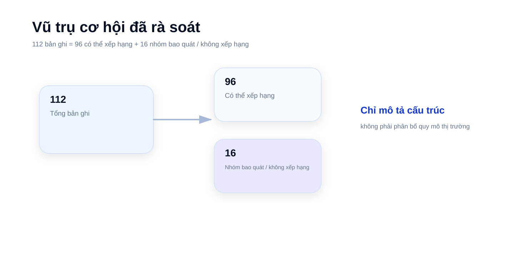
Đồ họa ngữ nghĩa phục vụ diễn giải; không phải bằng chứng độc lập.
WEB-03
Hai thị trường, hai logic chi tiền
B2B/B2G và B2C khác nhau ở đâu khi tiền được chi?
B2B/B2G mua kết quả thông qua người mua, chủ ngân sách và quy trình mua sắm; B2C trả tiền cho trải nghiệm sản phẩm, khả năng làm chủ kỹ năng/chơi lại/tiện ích và giá trị riêng của VR.
LOGIC NGƯỜI MUA
B2B/B2G
Hỗn hợp
Chứng minh: Logic thương mại riêng của nhánh.
Không chứng minh: Không chỉ định một người mua duy nhất cho mọi cơ hội.
Vấn đề → người dùng → người bảo trợ/chủ ngân sách → mua sắm → triển khai → kinh tế lặp lại.
LOGIC NGƯỜI CHƠI
B2C
Hỗn hợp
Chứng minh: Logic sản phẩm riêng của nhánh.
Không chứng minh: Giá tham chiếu không chứng minh mức sẵn sàng trả tiền cho sản phẩm của SAVA.
Hành động/tiện ích → giá trị riêng của VR → kiến trúc trả phí → chơi lại/duy trì → phân phối.
TƯỜNG LỬA NGỮ NGHĨA
Tách người dùng, người mua, người trả tiền
Hỗn hợpKhông tự điền người mua còn thiếu.
Chứng minh: Tách biệt vai trò.
Không chứng minh: Không suy diễn quyền sở hữu ngân sách.
Website chỉ gắn nhãn người mua/người trả tiền khi báo cáo hỗ trợ; nếu không, hiển thị CHƯA XÁC ĐỊNH / NGUỒN KHÔNG NÊU.
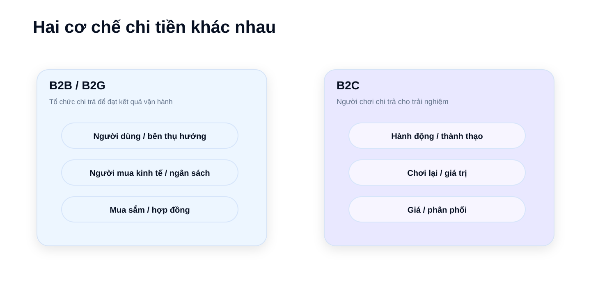
Đồ họa ngữ nghĩa phục vụ diễn giải; không phải bằng chứng độc lập.
WEB-04
Từ rà soát rộng đến phân tích sâu
Nghiên cứu đã thu hẹp như thế nào?
Hai nhánh độc lập đi từ rà soát rộng đến danh sách rút gọn, cơ hội cuối và phân tích sâu; xếp hạng thị trường được khóa trước khi áp lớp hành động của SAVA.
THU HẸP NGHIÊN CỨU ĐÃ THỰC THI
Thu hẹp B2B/B2G
SỐ LIỆU CHƯƠNG TRÌNH
Chứng minh: Quá trình thu hẹp nghiên cứu.
Không chứng minh: Không chứng minh tỷ lệ chuyển đổi thị trường hoặc xác suất thành công.
65 → 12 → 5 → 3Quy trình sàng lọc B2B/B2G
65 → 12 → 5 → 3.
THU HẸP NGHIÊN CỨU ĐÃ THỰC THI
Thu hẹp B2C
SỐ LIỆU CHƯƠNG TRÌNH
Chứng minh: Quá trình thu hẹp nghiên cứu.
Không chứng minh: Không chứng minh tỷ lệ chuyển đổi thị trường hoặc xác suất thành công.
32 → 11 → 5 → 3Quy trình sàng lọc B2C
32 → 11 → 5 → 3.
PHƯƠNG PHÁP
Khóa xếp hạng trước khi áp lớp SAVA
Hỗn hợp
Chứng minh: Thứ tự diễn giải.
Không chứng minh: Không xếp hạng lại.
Xếp hạng thị trường bên ngoài giữ nguyên; hành động của SAVA là lớp sau khóa, tách biệt.
Mỗi thẻ cho thấy người dùng, người mua, vấn đề, logic lặp lại, bằng chứng mạnh nhất, bằng chứng phản biện và trần diễn giải.
TOP 3
Ba phân tích B2B sâu nhất
Hỗn hợp
Chứng minh: Phạm vi phân tích sâu.
Không chứng minh: Không phải phê duyệt đầu tư.
Healthcare, Virtual Commissioning và Warehouse được mô tả tới cấp quy trình sử dụng.
#1Mô phỏng đào tạo thủ thuật / kỹ năng lâm sàng (Healthcare)
#2Kiểm thử hệ thống điều khiển trên mô hình số (Virtual Commissioning)
#3Mô phỏng quy hoạch và vận hành kho (Warehouse Planning/Simulation)
#4Đồ họa 3D thời gian thực cho truyền hình/trường quay ảo
#5Trí tuệ hình ảnh công trường (Construction Visual Intelligence)
#1Mô phỏng đào tạo thủ thuật / kỹ năng lâm sàng (Healthcare)PHÂN TÍCH SÂU
Thực chất là gì: Phần mềm mô phỏng đào tạo để người học y luyện thủ thuật, quy trình hoặc kỹ năng lâm sàng trong kịch bản giới hạn; không phải trình xem giải phẫu.
Người dùngSinh viên y, bác sĩ nội trú, bác sĩ/nhân viên y tế và giảng viên/đội mô phỏng tùy trường hợp sử dụng.
Người mua / trả tiềnTrường y, trung tâm y khoa học thuật hoặc bộ phận đào tạo/mô phỏng bệnh viện; người mua cụ thể cho SAVA chưa được chứng minh.
Vì sao vào vòng cuối: Vấn đề có hậu quả cao, có đường mua sắm tổ chức và bằng chứng học thuật hỗ trợ bối cảnh đào tạo.
Rủi ro chính: Thẩm quyền chuyên môn, người mua có tên, đối tác, cam kết trả phí, lõi tái sử dụng và kinh tế gia hạn/lặp lại vẫn chưa được chứng minh.
Hàm ý với SAVA: Ưu tiên kiểm chứng B2B #1 của SAVA; chỉ đầu tư để gia nhập qua kiểm chứng có giới hạn, theo đối tác/người mua trước.
Không được suy ra: Không suy ra SAVA có thẩm quyền lâm sàng, đã phê duyệt thủ thuật cụ thể, phạm vi sản phẩm đầy đủ, quyền mở rộng, dự báo doanh thu hoặc kinh tế lặp lại.
#2Kiểm thử hệ thống điều khiển trên mô hình số (Virtual Commissioning)PHÂN TÍCH SÂU
Thực chất là gì: Kiểm thử logic điều khiển/PLC trên máy hoặc dây chuyền ảo trước khi chạy thử và nghiệm thu vật lý.
Người dùngKỹ sư điều khiển/tự động hóa, nhà chế tạo máy và đơn vị tích hợp hệ thống.
Người mua / trả tiềnNhà máy, OEM/nhà chế tạo máy, đơn vị tích hợp hệ thống hoặc bộ phận kỹ thuật/chủ ngân sách đầu tư tài sản.
Vì sao vào vòng cuối: Cơ chế tạo giá trị rõ; trường hợp Rockwell công bố mức giảm thời gian và các dự án tiếp theo.
Rủi ro chính: Trường hợp do nhà cung cấp công bố không phải chuẩn ROI độc lập; khoảng trống PLC/OT, độ chính xác mô hình, hệ sinh thái hiện hữu và tích hợp của SAVA còn lớn.
Hàm ý với SAVA: Hành động B2B #3 của SAVA: THEO DÕI / GIỮ LỰA CHỌN CHIẾN LƯỢC; không thay đổi hạng #2 bên ngoài.
Không được suy ra: Không suy SAVA nên xây toàn bộ stack controls/OT hoặc mở đội thường trực.
#3Mô phỏng quy hoạch và vận hành kho (Warehouse Planning/Simulation)PHÂN TÍCH SÂU
Thực chất là gì: Mô phỏng theo kịch bản để thử bố trí, luồng vật liệu, công suất và điểm nghẽn trước khi thay đổi kho thật.
Người dùngĐội kỹ thuật và vận hành kho.
Người mua / trả tiền3PL, nhà bán lẻ, nhà sản xuất hoặc đội đầu tư/vận hành; người mua trong tài khoản SAVA cụ thể vẫn phải xác định.
Vì sao vào vòng cuối: Có trường hợp thực tế về mô phỏng bố trí kho và cơ chế quyết định trước khi thay đổi vật lý.
Rủi ro chính: Gánh nặng dữ liệu/hiệu chuẩn/xác nhận, đường người mua/thanh toán chưa chắc và rủi ro biến thành tư vấn theo dự án.
Hàm ý với SAVA: Hành động B2B #2 của SAVA: theo điều kiện/kích hoạt; chỉ mở khi có vấn đề kho thật, dữ liệu đại diện và người mua chịu trách nhiệm.
Không được suy ra: Không mở đội mô phỏng sự kiện rời rạc thường trực trước điều kiện kích hoạt; không suy ra doanh thu lặp lại.
#4Đồ họa 3D thời gian thực cho truyền hình/trường quay ảoHỒ SƠ CUỐI
Thực chất là gì: Phần mềm và hỗ trợ đồ họa 3D thời gian thực, AR/trường quay ảo cho sản xuất truyền hình trực tiếp.
Người dùngĐội đồ họa, sản xuất và công nghệ truyền hình.
Người mua / trả tiềnĐài truyền hình, đơn vị truyền thông thể thao và tổ chức sản xuất.
Vì sao vào vòng cuối: Có giá trị mua sắm chính thức ORF–Vizrt 2026–2028 và tín hiệu triển khai của NBC.
Rủi ro chính: Chi phí chuyển đổi, yêu cầu độ tin cậy cao, quan hệ nhà cung cấp hiện hữu và rào cản gia nhập cho nhà cung cấp mới.
Hàm ý với SAVA: DỰ PHÒNG; chỉ mở lại khi có ngách gia nhập đáng tin và bằng chứng SAVA đáp ứng độ tin cậy/tiếp cận.
Không được suy ra: Không suy SAVA nên lập đội sản phẩm truyền hình chuyên dụng chỉ từ mức hấp dẫn thị trường.
#5Trí tuệ hình ảnh công trường (Construction Visual Intelligence)HỒ SƠ CUỐI
Thực chất là gì: Dùng hình ảnh/3D/reality capture để theo dõi tiến độ và chất lượng công trường, so với kế hoạch/thiết kế và phát hiện sai lệch.
Người dùngĐội VDC, dự án, hiện trường và QA.
Người mua / trả tiềnNhà thầu, chủ đầu tư và tổ chức dự án.
Vì sao vào vòng cuối: Có quy trình đã được đóng gói thành sản phẩm và nhóm sản phẩm thực tế đang hoạt động.
Rủi ro chính: Bằng chứng do nhà cung cấp công bố chiếm ưu thế; thanh toán độc lập, gia hạn và kết quả quy thuộc còn yếu; có rủi ro bị gộp vào giải pháp lớn hơn.
Hàm ý với SAVA: DỰ PHÒNG; chỉ mở lại khi có bằng chứng độc lập về thanh toán/gia hạn lặp lại, tiếp cận của SAVA và kết quả có thể quy thuộc.
Không được suy ra: Không xây nền tảng chỉ vì SAVA có năng lực 3D.
PHÂN TÍCH SÂU
Mô phỏng đào tạo thủ thuật / kỹ năng lâm sàng (Healthcare)
Sản phẩm mô phỏng đào tạo theo kịch bản giới hạn để người học y thực hành lặp lại, nhận phản hồi và được đánh giá.
Người dùngNgười học y và đội đào tạo/mô phỏng.
Người mua / trả tiềnTổ chức đào tạo y tế; người mua cụ thể cho SAVA phải được xác nhận.
Bằng chứng hỗ trợ: Có tín hiệu mua sắm tổ chức và bằng chứng học thuật về mô phỏng/đào tạo VR.
Phản biện: Hiệu quả phụ thuộc bối cảnh; thẩm quyền lâm sàng, người mua, đối tác, cam kết trả phí và lõi tái sử dụng chưa được chứng minh.
Điều chưa biết: Người mua có tên, đối tác chuyên môn, cam kết trả phí, phạm vi lõi tái sử dụng và kinh tế lặp lại.
PHÂN TÍCH SÂU
Virtual Commissioning định hướng hệ thống điều khiển
Kiểm thử logic điều khiển/PLC trên máy hoặc dây chuyền ảo trước chạy thử vật lý.
Người dùngKỹ sư điều khiển/tự động hóa, nhà chế tạo máy, đơn vị tích hợp hệ thống.
Người mua / trả tiềnNhà máy/OEM/SI hoặc chủ ngân sách kỹ thuật.
Bằng chứng hỗ trợ: Trường hợp Rockwell công bố mức giảm tới 50% và ba dự án tiếp theo.
Phản biện: Trường hợp do nhà cung cấp công bố; khoảng trống PLC/OT, độ chính xác mô hình và hệ sinh thái đối tác còn lớn.
Điều chưa biết: Đối tác controls/SI/OEM, lớp giá trị SAVA sở hữu và kinh tế lặp lại.
PHÂN TÍCH SÂU
Mô phỏng quy hoạch và vận hành kho
Mô phỏng bố trí, luồng vật liệu, công suất và điểm nghẽn để so sánh kịch bản trước thay đổi ngoài đời thật.
Người dùngĐội kỹ thuật/vận hành kho.
Người mua / trả tiềnĐơn vị vận hành, 3PL, nhà bán lẻ/nhà sản xuất hoặc chủ ngân sách dự án.
Bằng chứng hỗ trợ: Có trường hợp thực tế về mô phỏng bố trí kho.
Phản biện: Dữ liệu, hiệu chuẩn và xác nhận có thể khiến mỗi dự án trở nên riêng lẻ; đường người mua/thanh toán chưa chắc chắn.
Điều chưa biết: Dữ liệu đại diện, người mua chịu trách nhiệm, lớp mô hình tái sử dụng và kinh tế lặp lại.
Hình minh họa
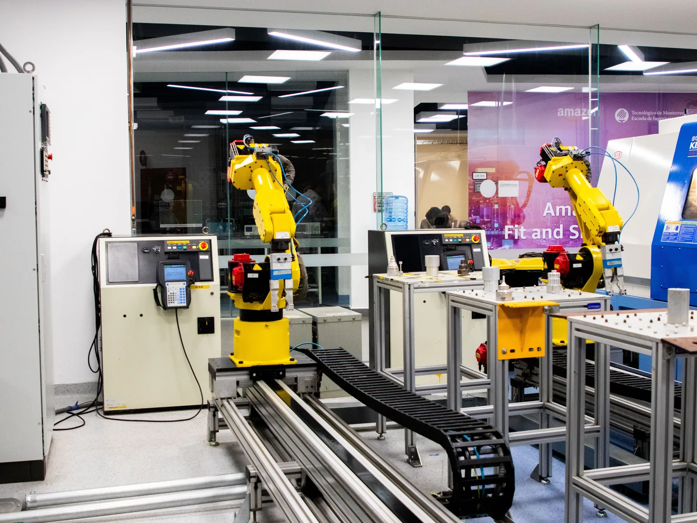
Hình minh họa bối cảnh tự động hóa công nghiệp và điều khiển hệ thống trong môi trường nhà máy mô phỏng.
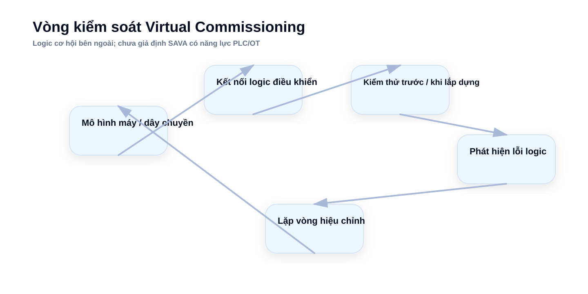
Đồ họa ngữ nghĩa phục vụ diễn giải; không phải bằng chứng độc lập.
Hình minh họa
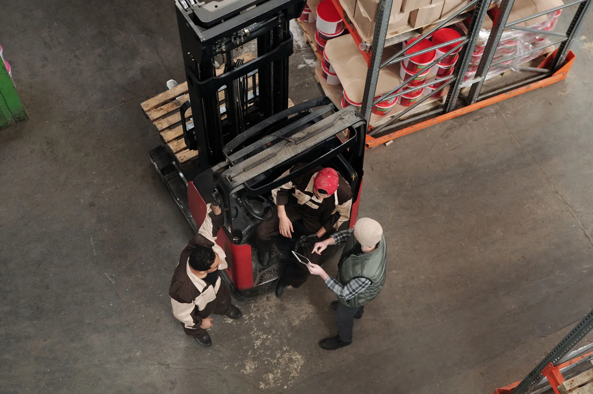
Hình minh họa hoạt động lập kế hoạch, bố trí và dòng chảy vật tư trong kho.
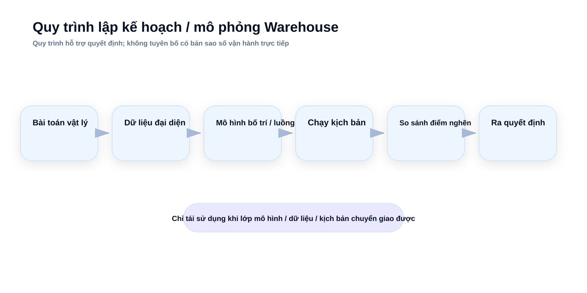
Đồ họa ngữ nghĩa phục vụ diễn giải; không phải bằng chứng độc lập.
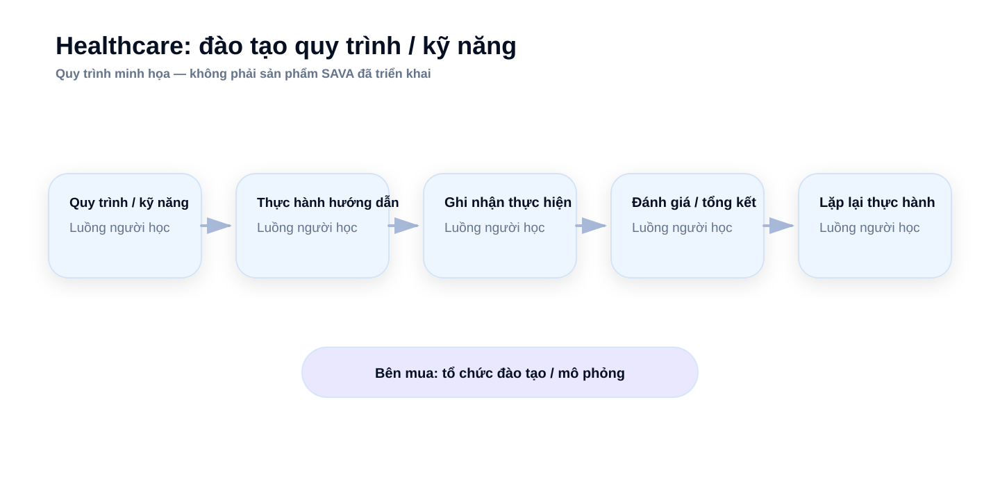
Đồ họa ngữ nghĩa phục vụ diễn giải; không phải bằng chứng độc lập.
WEB-07
B2C: 11 hướng đã đủ mạnh để giữ lại
11 không gian sản phẩm B2C nào đáng so sánh sâu hơn?
11 hướng B2C có đủ tín hiệu về nhu cầu/sử dụng/thanh toán/chơi lại/giá trị riêng của VR để so sánh; năm hướng đi tiếp vào vòng cơ hội cuối.
DANH SÁCH RÚT GỌN
11 không gian sản phẩm B2C
Hỗn hợp
Chứng minh: Danh sách rút gọn B2C đầy đủ trong phạm vi nghiên cứu.
Không chứng minh: Không chứng minh mức hấp dẫn ngang nhau hoặc SAVA đã phê duyệt.
Khám phá theo hành động của người chơi, tín hiệu thanh toán, logic chơi lại và kết quả sàng lọc.
QUY TẮC NỘI DUNG
Bắt đầu từ hành động của người chơi
Hỗn hợp
Chứng minh: Định nghĩa sản phẩm để CEO đọc nhanh.
Không chứng minh: Không tự tạo concept trò chơi mới.
Mỗi hướng B2C bắt đầu bằng việc người chơi thực sự làm gì trước khi nói về thị trường.
Đang hiển thị 11 / 11
Trò chơi VR dựa trên kỹ năng thể thaoVÀO VÒNG CƠ HỘI CUỐI
Người chơi làm gì: Không gian sản phẩm VR trả phí dựa trên việc làm chủ kỹ năng thể chất qua chuyển động cơ thể; chưa chọn môn thể thao cụ thể.
Có sản phẩm trả phí; tương tác cơ thể là phần cấu trúc của trải nghiệm; động lực luyện lại mạnh.
Kết quả: VÒNG CUỐI — #1
Sports vẫn là một NHÓM CƠ HỘI; không tự chọn môn thể thao bằng suy diễn.
Trò chơi VR hành động theo nhạcVÀO VÒNG CƠ HỘI CUỐI
Người chơi làm gì: Luận điểm VR rhythm/action: tín hiệu hoặc mẫu nhịp kích hoạt hành động cơ thể, phản hồi, thử lại và làm chủ.
Có sản phẩm trả phí và gói nhạc trả phí; vòng lặp có thể lặp lại; luận điểm ưu tiên hệ thống phù hợp kiểm chứng bằng bản thử nghiệm.
Kết quả: VÒNG CUỐI — #2
Music ≠ Music World; chưa phê duyệt trò chơi đầy đủ; hành động cụ thể vẫn do bản thử nghiệm xác định.
Trò chơi giải đố không gian/hệ thốngVÀO VÒNG CƠ HỘI CUỐI
Người chơi làm gì: Sản phẩm giải đố không gian/hệ thống trả phí, nơi người chơi thao tác hệ 3D và tìm nhiều cách giải/tối ưu.
Có sản phẩm giải đố trả phí; thiết kế hệ thống có thể tạo chiều sâu mà không cần khối lượng nội dung tuyến tính lớn.
Kết quả: VÒNG CUỐI — #3
Giá niêm yết sản phẩm trả phí không chứng minh doanh số, duy trì hoặc TAM.
Học ngoại ngữ trong tình huống mô phỏngVÀO VÒNG CƠ HỘI CUỐI
Người chơi làm gì: Luyện ngoại ngữ nhập vai bằng nghe, nói và phản hồi trong các bối cảnh mô phỏng.
Có sản phẩm tham chiếu trả phí và bằng chứng học thuật.
Kết quả: VÒNG CUỐI — #4
Bằng chứng học thuật không phải bằng chứng thương mại.
Trải nghiệm VR tại địa điểm vật lý, di chuyển tự do theo nhómVÀO VÒNG CƠ HỘI CUỐI
Người chơi làm gì: Giải trí VR di chuyển tự do theo nhóm, bán vé và vận hành tại địa điểm vật lý.
Có mô hình nhà cung cấp/địa điểm, cơ chế kinh tế vé và số liệu quy mô mạng lưới do doanh nghiệp công bố.
Kết quả: VÒNG CUỐI — #5
Một địa điểm đóng cửa không phải tỷ lệ thất bại toàn ngành; quy mô do doanh nghiệp công bố không chứng minh EBITDA địa điểm.
Rèn luyện thể chất bằng VR theo thuê baoLOẠI TRƯỚC VÒNG CƠ HỘI CUỐI
Người chơi làm gì: Thể dục VR thuê bao với nội dung bài tập/lớp học cập nhật lặp lại.
Nhu cầu lặp lại và mô hình thuê bao tồn tại; FitXR công bố thư viện hơn 1.000 bài tập.
Kết quả: LOẠI trước vòng cuối
Số liệu do doanh nghiệp công bố là tín hiệu về gánh nặng nội dung, không chứng minh số thuê bao.
Không gian làm việc/màn hình ảoLOẠI TRƯỚC VÒNG CƠ HỘI CUỐI
Người chơi làm gì: Trường hợp sử dụng năng suất không gian cho màn hình ảo, làm việc hoặc họp.
Trường hợp sử dụng cụ thể; Immersed công bố khoảng 1,5 triệu người dùng phần mềm duy nhất.
Kết quả: LOẠI trước vòng cuối
Quy mô người dùng do doanh nghiệp công bố không phải bằng chứng kinh tế sản phẩm.
Xem thử nội thất/sản phẩm trong không gianLOẠI TRƯỚC VÒNG CƠ HỘI CUỐI
Người chơi làm gì: Hiển thị thương mại không gian để đặt sản phẩm ảo vào phòng trước khi mua.
Houzz công bố hơn 1 triệu người dùng AR và một tương quan hành vi.
Kết quả: LOẠI trước vòng cuối
Tương quan quan sát do doanh nghiệp công bố không phải bằng chứng nhân quả.
Nền tảng xã hội/UGC trong không gian ảoLOẠI TRƯỚC VÒNG CƠ HỘI CUỐI
Người chơi làm gì: Nền tảng không gian xã hội/UGC liên tục, nơi người dùng gặp gỡ, chơi, sáng tạo và tham gia kinh tế cộng đồng.
Một số đơn vị dẫn đầu công bố quy mô rất lớn; hiệu ứng mạng tồn tại trong nhóm sản phẩm.
Kết quả: LOẠI trước vòng cuối
Không suy ra thất bại toàn nhóm từ kết quả của một doanh nghiệp.
Trò chơi hành động/phiêu lưu VR cao cấpLOẠI TRƯỚC VÒNG CƠ HỘI CUỐI
Người chơi làm gì: Trò chơi VR hành động/phiêu lưu trả phí với mức sản xuất cao, khám phá/chiến đấu và nội dung kể chuyện lớn.
Các sản phẩm trả phí hiện hữu và mức giá niêm yết cho thấy nhóm sản phẩm tồn tại.
Kết quả: LOẠI trước vòng cuối
Sự tồn tại của sản phẩm trả phí không chứng minh kinh tế sản xuất khả thi cho SAVA.
Học/chơi nhạc cụ trong VRLOẠI TRƯỚC VÒNG CƠ HỘI CUỐI
Người chơi làm gì: Học, luyện tập hoặc biểu diễn nhạc cụ trong VR.
Nhu cầu luyện tập thực và mô hình thương mại tồn tại trong hoặc ngoài VR.
Kết quả: LOẠI trước vòng cuối
Sự tồn tại của nhu cầu luyện nhạc không chứng minh WHY-VR hoặc nhu cầu trả phí cho sản phẩm SAVA.
WEB-08
B2C: 5 cơ hội cuối
Năm cơ hội B2C cuối là gì và tín hiệu trả phí phải được đọc thế nào?
Thứ tự bên ngoài đã khóa: #1 Sports, #2 Music, #3 Puzzle, #4 Immersive Language, #5 LBE. Giá và số liệu doanh nghiệp chỉ cho thấy kiến trúc sản phẩm/tín hiệu sử dụng trong phạm vi nguồn, không chứng minh doanh số hay TAM.
CHƯA ÁP MỨC PHÙ HỢP VỚI SAVA
Xếp hạng B2C bên ngoài
Hỗn hợp
Chứng minh: Thứ tự bên ngoài đã khóa.
Không chứng minh: Không phải thứ tự thực thi của SAVA.
#1 Sports · #2 Music · #3 Puzzle · #4 Immersive Language · #5 Location-Based Free-Roam Entertainment.
SO SÁNH
5 hồ sơ cơ hội cuối B2C
Hỗn hợp
Các thẻ cho thấy hành động của người chơi, hình thức trả tiền, chơi lại, giá trị riêng của VR, gánh nặng sản xuất và bằng chứng phản biện.
TRẦN DIỄN GIẢI BẰNG CHỨNG
Giá niêm yết cho thấy kiến trúc trả phí — không chứng minh độ sâu nhu cầu
Giá niêm yết chính thức
Giá sản phẩm chính thức có thể cho thấy một sản phẩm trả phí tồn tại; không chứng minh doanh số, duy trì, lợi nhuận, TAM hoặc mức sẵn sàng trả tiền cho sản phẩm của SAVA.
#1Thể thao / làm chủ kỹ năng thể chất (Sports)
#2Âm nhạc nhịp điệu/hành động (Music rhythm/action)
#3Giải đố không gian/hệ thống (Spatial/Systemic Puzzle)
#4Học ngoại ngữ nhập vai (Immersive Language)
#5Giải trí VR di chuyển tự do tại địa điểm (LBE)
#1Thể thao / làm chủ kỹ năng thể chất (Sports)PHÂN TÍCH SÂU
Thực chất là gì: Nhóm sản phẩm VR trả phí dựa trên chuyển động cơ thể, nhịp, phối hợp và phán đoán không gian; chưa chọn môn thể thao.
Người dùngNgười chơi/người dùng VR.
Người mua / trả tiềnNgười chơi/người dùng cuối; cửa hàng/nền tảng làm kênh phân phối.
Vì sao vào vòng cuối: Có sản phẩm trả phí và kiến trúc gói/thuê bao tham chiếu; tương tác cơ thể là giá trị cấu trúc của nhóm sản phẩm.
Rủi ro chính: Đối thủ chuyên môn mạnh; SAVA chưa chọn môn/ngách và chưa chứng minh chất lượng tương tác/vật lý hoặc tăng trưởng người dùng trả phí.
Hàm ý với SAVA: Hành động B2C #3 của SAVA: chỉ khám phá ngách; hạng #1 bên ngoài giữ nguyên.
Không được suy ra: Không tự chọn môn thể thao hoặc phạm vi trò chơi đầy đủ; xếp hạng thị trường không phải thứ tự hành động SAVA.
#2Âm nhạc nhịp điệu/hành động (Music rhythm/action)PHÂN TÍCH SÂU
Thực chất là gì: Luận điểm VR rhythm/action mới: tín hiệu hoặc mẫu nhịp dẫn tới hành động cơ thể, phản hồi thời điểm, thử lại và làm chủ. Không phải Music World 2.
Người dùngNgười chơi/người dùng VR.
Người mua / trả tiềnNgười chơi/người dùng cuối; phân phối qua cửa hàng/nhà phát hành/nền tảng; luận điểm B2C cốt lõi không yêu cầu người mua tổ chức.
Vì sao vào vòng cuối: Giá gói 5 bài Synth Riders cho thấy kiến trúc nội dung trả phí; trang cấp phép chính thức cho thấy quyền âm nhạc là ràng buộc vận hành thật.
Rủi ro chính: Rủi ro quyền/danh mục nhạc, gánh nặng tạo nội dung, độ tin cậy nhịp/input, rủi ro sao chép, vòng đời nền tảng/phân phối; quyền thắng của SAVA chưa được chứng minh.
Hàm ý với SAVA: Ưu tiên kiểm chứng B2C #1 của SAVA — có điều kiện bản thử nghiệm; không thay đổi hạng #2 bên ngoài.
Không được suy ra: Không suy ra trò chơi đầy đủ đã được phê duyệt, bản sao Beat Saber, thế giới hòa nhạc, thế giới xã hội, luận điểm nền tảng hoặc tái sử dụng Music World.
#3Giải đố không gian/hệ thống (Spatial/Systemic Puzzle)PHÂN TÍCH SÂU
Thực chất là gì: Sản phẩm giải đố VR trả phí tập trung vào thao tác, kết nối, định tuyến hoặc tối ưu hệ thống 3D.
Người dùngNgười chơi/người dùng VR.
Người mua / trả tiềnNgười chơi/người dùng cuối.
Vì sao vào vòng cuối: Giá tham chiếu chính thức của Cubism và Puzzling Places cho thấy nhóm sản phẩm trả phí tồn tại.
Rủi ro chính: Rủi ro chơi một lần, sản phẩm phẳng thay thế và khả năng được khám phá trên cửa hàng; giá trị riêng của VR và chơi lại chưa được chứng minh.
Hàm ý với SAVA: Hành động B2C #2 của SAVA — hướng thách thức nhỏ; không được làm chậm kiểm chứng Music.
Không được suy ra: Không suy ra phê duyệt sản xuất đầy đủ hoặc khối lượng nội dung lớn chỉ từ chi phí bản thử nghiệm thấp hơn.
#4Học ngoại ngữ nhập vai (Immersive Language)HỒ SƠ CUỐI
Thực chất là gì: Luyện ngoại ngữ trong bối cảnh mô phỏng bằng nghe, nói và phản hồi.
Người dùngNgười học ngôn ngữ/người dùng cuối.
Người mua / trả tiềnNgười học/người dùng; Noun Town là sản phẩm mua một lần tham chiếu; kiến trúc người trả tiền của SAVA chưa được phê duyệt.
Vì sao vào vòng cuối: Noun Town có giá tham chiếu, 12 ngôn ngữ, hơn 200.000 người chơi do doanh nghiệp công bố; tổng quan học thuật bao gồm 41 RCT.
Rủi ro chính: Bằng chứng học thuật không phải duy trì thương mại; giải pháp ngoài VR mạnh; mức tăng giá trị do không gian và lợi thế của SAVA chưa rõ.
Hàm ý với SAVA: DỰ PHÒNG.
Không được suy ra: Không xây chương trình curriculum/nội dung lớn trước khi các điều kiện này được chứng minh.
#5Giải trí VR di chuyển tự do tại địa điểm (LBE)HỒ SƠ CUỐI
Thực chất là gì: Trải nghiệm VR theo nhóm, bán vé tại địa điểm vật lý, nơi người chơi di chuyển tự do cùng nhau.
Người dùngNhóm khách/người chơi tại địa điểm.
Người mua / trả tiềnNgười tiêu dùng mua vé; đơn vị vận hành địa điểm trả cho nhà cung cấp theo hệ thống/cấp phép/chia sẻ doanh thu.
Vì sao vào vòng cuối: Zero Latency công bố giá hệ thống khoảng USD 165.000, chia sẻ 16% doanh thu vé, hơn 120 địa điểm và hơn 5 triệu lượt chơi.
Rủi ro chính: Trường hợp Frisco đóng sau khoảng 5 tháng; capex, thuê mặt bằng, nhân sự, mức sử dụng và tự cạnh tranh có thể đảo chiều kinh tế địa điểm.
Hàm ý với SAVA: THEO DÕI / ĐỐI TÁC; chỉ xem xét đường nhẹ tài sản với kinh tế địa điểm được kiểm chứng độc lập.
Không được suy ra: Không đầu tư địa điểm/vốn lớn chỉ dựa trên mức hấp dẫn của nhóm sản phẩm.
PHÂN TÍCH SÂU
Thể thao / làm chủ kỹ năng thể chất
Nhóm sản phẩm VR dựa trên chuyển động cơ thể, nhịp, phối hợp và phán đoán không gian; chưa phải concept môn thể thao cụ thể.
Người dùngNgười chơi VR.
Người mua / trả tiềnNgười chơi/người dùng cuối.
Bằng chứng hỗ trợ: Có sản phẩm trả phí và kiến trúc mua/thuê bao tham chiếu trong nhóm sản phẩm.
Phản biện: Đối thủ chuyên môn mạnh; SAVA chưa chọn ngách/hành động và chưa chứng minh độ tin cậy tương tác/vật lý.
Điều chưa biết: Môn/ngách cụ thể, chất lượng tương tác, lý do phải là VR, chơi lại và khác biệt.
PHÂN TÍCH SÂU
Âm nhạc nhịp điệu/hành động
Luận điểm VR rhythm/action mới dựa trên tín hiệu/mẫu nhịp → hành động cơ thể → phản hồi → thử lại → làm chủ; không phải Music World 2.
Người dùngNgười chơi VR.
Người mua / trả tiềnNgười chơi/người dùng cuối.
Bằng chứng hỗ trợ: Có kiến trúc gói nhạc trả phí và nguồn chính thức về yêu cầu cấp phép âm nhạc.
Phản biện: Rủi ro quyền/danh mục, gánh nặng tạo nội dung, độ tin cậy timing/input, phân phối và vòng đời nền tảng.
Điều chưa biết: Hành động cốt lõi chính xác, chơi lại tự nguyện, năng suất tạo nội dung, mức sẵn sàng trả tiền, phân phối và kinh tế bản quyền.
PHÂN TÍCH SÂU
Giải đố không gian/hệ thống
Sản phẩm giải đố VR trả phí dựa trên thao tác hệ thống 3D, nhiều cách giải hoặc tối ưu.
Người dùngNgười chơi VR.
Người mua / trả tiềnNgười chơi/người dùng cuối.
Bằng chứng hỗ trợ: Có các sản phẩm giải đố VR trả phí với giá niêm yết chính thức.
Phản biện: Rủi ro chơi một lần, giải pháp phẳng thay thế và khả năng được khám phá.
Điều chưa biết: Lợi thế thao tác không gian, nhiều cách giải, chơi lại sau lần đầu và gánh nặng sản xuất.
Hình minh họa
Hình minh họa giải đố không gian / logic hệ thống và tương tác 3D.
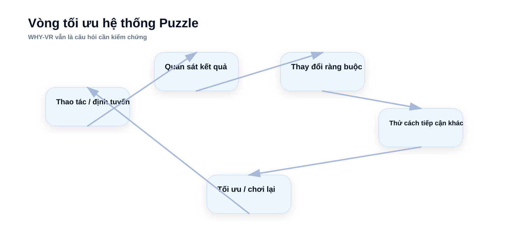
Đồ họa ngữ nghĩa phục vụ diễn giải; không phải bằng chứng độc lập.
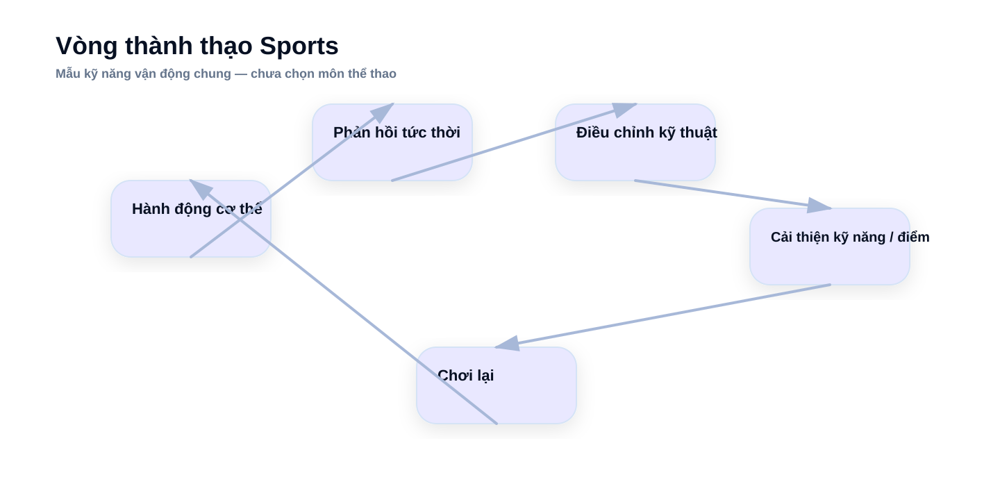
Đồ họa ngữ nghĩa phục vụ diễn giải; không phải bằng chứng độc lập.
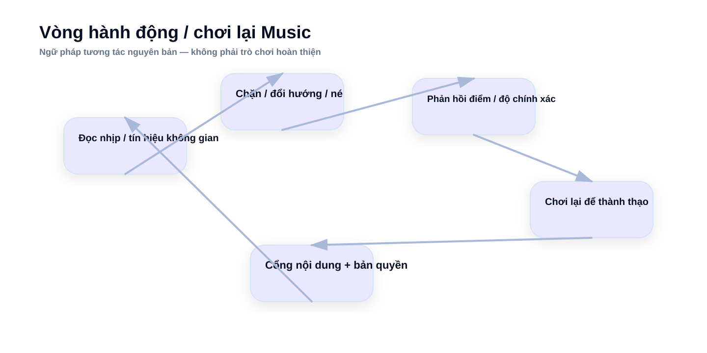
Đồ họa ngữ nghĩa phục vụ diễn giải; không phải bằng chứng độc lập.
Hình minh họa
Hình minh họa luyện tập thể chất / kỹ năng vận động bằng công nghệ nhập vai.
WEB-09
Thị trường xếp hạng ≠ SAVA hành động
Vì sao xếp hạng thị trường bên ngoài và hành động của SAVA khác nhau?
Xếp hạng bên ngoài đánh giá mức hấp dẫn thị trường trước khi xét SAVA; lớp hành động của SAVA hỏi nên mua thêm một đơn vị bằng chứng ở đâu trước, dựa trên khả năng tiếp cận và khoảng trống năng lực hiện tại.
ĐỐI CHIẾU SAU KHI KHÓA
Xếp hạng thị trường → Hành động của SAVA
Hỗn hợp
Chứng minh: Hai lăng kính quyết định tách biệt.
Không chứng minh: Đây không phải xếp hạng lại.
Hiển thị hai lớp cạnh nhau; không được dùng lớp này thay thế lớp kia.
VÌ SAO KHÁC NHAU
Sports: #1 bên ngoài → #3 hành động SAVA
Hỗn hợpHạng #1 bên ngoài giữ nguyên.
Chứng minh: Lý do hành động của SAVA khác xếp hạng bên ngoài.
Không chứng minh: Không hạ xếp hạng bên ngoài.
Cấu trúc thị trường mạnh, nhưng SAVA chưa chọn môn/ngách cụ thể và chưa chứng minh chất lượng tương tác chuyên biệt.
VÌ SAO KHÁC NHAU
Music: #2 bên ngoài → #1 kiểm chứng SAVA
Hỗn hợpHạng #2 bên ngoài giữ nguyên.
Chứng minh: Lý do ưu tiên kiểm chứng của SAVA.
Không chứng minh: Không phê duyệt một trò chơi đầy đủ.
Độ gần tương đối khiến một bản thử nghiệm nhỏ là bước học phù hợp hơn, trong khi sản phẩm và quyền thắng của SAVA vẫn chưa được chứng minh.
B2B/B2G — xếp hạng thị trường → hành động SAVA
#1HealthcareKiểm chứng #1
#2Virtual CommissioningGiữ lựa chọn chiến lược #3
#3WarehouseKích hoạt theo điều kiện #2
#4Broadcast realtime 3DDự phòng
#5Construction Visual IntelligenceDự phòng
B2C — xếp hạng thị trường → hành động SAVA
#1SportsTìm ngách hành động #3
#2MusicKiểm chứng bản thử nghiệm #1
#3PuzzleHướng thách thức nhỏ #2
#4Immersive LanguageDự phòng
#5LBETheo dõi / đối tác
Đồ họa ngữ nghĩa phục vụ diễn giải; không phải bằng chứng độc lập.
WEB-10
SAVA có gì, thiếu gì, và chưa được phép suy ra gì
Bằng chứng năng lực hiện tại cho phép kết luận đến đâu?
SAVA có độ gần về 3D/VR/backend/công cụ nội dung, nhưng độ gần năng lực không đồng nghĩa quyền thắng, thẩm quyền chuyên môn hoặc công suất nhân sự sẵn sàng.
DỮ LIỆU NỘI BỘ ĐÃ GHI NHẬN
27 vai trò trong danh sách Savrse
Tài liệu nội bộKhông đồng nghĩa có công suất nhân sự trống.
Chứng minh: Sự hiện diện của vai trò.
Không chứng minh: Không chứng minh FTE sẵn sàng, mức sử dụng nhân lực hoặc năng lực chuyên môn ngành.
27Số vai trò Savrse trong kiểm toán năng lực
Kiểm toán năng lực ghi nhận sự hiện diện của các vai trò liên quan.
DỮ LIỆU NỘI BỘ ĐÃ GHI NHẬN
>80 nhân sự toàn công ty
Tài liệu nội bộKhông phải Savrse team size.
Chứng minh: Quy mô toàn công ty.
Không chứng minh: Không chứng minh công suất có thể phân bổ cho Savrse.
>80Quy mô nhân sự toàn công ty SAVA
Quy mô nhân sự theo hồ sơ công ty; phạm vi là toàn SAVA, không riêng Savrse.
TƯỜNG LỬA NĂNG LỰC
Độ gần năng lực ≠ thẩm quyền
Hỗn hợp
Chứng minh: Ranh giới năng lực.
Không chứng minh: Không chứng minh quyền thắng của SAVA.
Năng lực 3D/Unity/VR có thể rút ngắn phần công việc runtime/rendering chung; không chứng minh quy trình lâm sàng, controls/OT hoặc chất lượng tương tác chuyên biệt theo môn thể thao.
SỞ HỮU TRÍ TUỆ / KỸ THUẬT / NGHĨA VỤ
Chỉ tái sử dụng sau kiểm toán
Hỗn hợp
Chứng minh: Quản trị tái sử dụng.
Không chứng minh: Chưa xác lập tỷ lệ tái sử dụng hoặc mức tiết kiệm chi phí.
Mã nguồn/tài sản/công cụ chỉ là ứng viên cho tới khi kiểm tra kiến trúc, hiệu năng, quyền, giấy phép, nợ kỹ thuật và nghĩa vụ.
WEB-11
Healthcare: đường kiểm chứng trước khi xây
Healthcare đứng #1 nhưng SAVA phải chứng minh gì trước khi xây?
Healthcare là #1 bên ngoài và ưu tiên kiểm chứng B2B #1 của SAVA, nhưng đường vào phải do đối tác/chuyên môn và người mua dẫn dắt, với các cổng kiểm chứng về thẩm quyền, người mua và cam kết trả phí.
HEALTHCARE
Sáu cổng trước khi xây đáng kể
Hỗn hợp
Chứng minh: Kiến trúc kiểm chứng có giới hạn.
Không chứng minh: Không cổng nào được mặc định là đã vượt qua.
Đối tác/thẩm quyền chuyên môn → người mua → cam kết trả phí → mua sắm/IT/bảo mật/LMS → lõi tái sử dụng → hiệu quả kinh tế đo được.
KHÔNG PHẢI TRÌNH XEM GIẢI PHẪU
Sản phẩm phải cho phép làm gì
Hỗn hợp
Chứng minh: Ngữ nghĩa của quy trình sử dụng.
Không chứng minh: Chưa phê duyệt thủ thuật cụ thể.
Tổ chức/trường y/bệnh viện → người học → kịch bản đào tạo giới hạn → thực hành lặp lại → hành động/quyết định → phản hồi → đánh giá/tổng kết.
QUYỀN DỪNG
Dừng nếu không vượt qua thẩm quyền/người mua/tái sử dụng
Hỗn hợp
Chứng minh: Các điều kiện dừng.
Không chứng minh: Không định trước rằng kiểm chứng sẽ thất bại.
Không có thẩm quyền; không có chủ ngân sách; chỉ có quan tâm miễn phí; hoặc mỗi khách hàng đều cần xây lại gần như toàn bộ → dừng hoặc thu hẹp.
01Tổ chức / trường y / bệnh viện
02Người học
03Kịch bản đào tạo giới hạn
04Thực hành lặp lại
05Hành động / quyết định
06Phản hồi
07Đánh giá / tổng kết
CHƯA ĐƯỢC XÁC THỰCĐối tác / thẩm quyền chuyên môn
CHƯA ĐƯỢC XÁC THỰCNgười mua / người bảo trợ có tên
CHƯA ĐƯỢC XÁC THỰCCam kết thương mại trả phí
CHƯA ĐƯỢC XÁC THỰCĐường mua sắm / IT / bảo mật / LMS
CHƯA ĐƯỢC XÁC THỰCRanh giới phần mềm/lõi tái sử dụng
CHƯA ĐƯỢC XÁC THỰCKinh tế / khả năng lặp lại đo được
Vượt một cổng chỉ cho phép bước học hỏi kế tiếp; không tự động cho phép xây hoặc mở rộng quy mô.
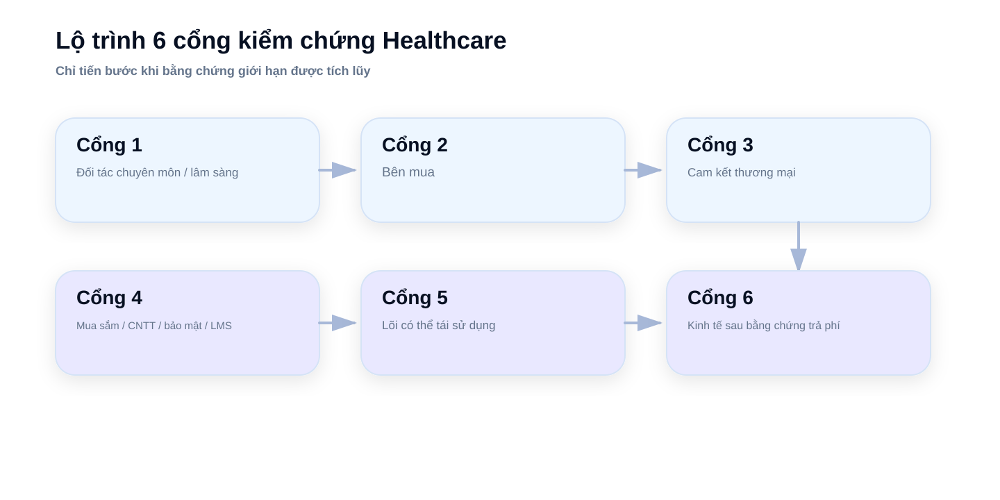
Đồ họa ngữ nghĩa phục vụ diễn giải; không phải bằng chứng độc lập.
Hình minh họa
Hình minh họa môi trường đào tạo kỹ năng y khoa bằng công nghệ nhập vai.
WEB-12
Music: prototype để chứng minh sản phẩm, không phải Music World 2
Bản thử nghiệm Music phải chứng minh điều gì?
Luận điểm mới là VR rhythm/action dựa trên làm chủ kỹ năng: chơi một mình được, hệ thống trước nội dung, thúc đẩy chơi lại/làm chủ và định hướng sản phẩm trả phí. Hành động cốt lõi vẫn do bản thử nghiệm xác định.
DO BẢN THỬ NGHIỆM XÁC ĐỊNH
Vòng lặp cốt lõi cần chứng minh
Hỗn hợpHành động cụ thể vẫn phải do bản thử nghiệm xác định.
Chứng minh: Cấu trúc kiểm chứng dự kiến.
Không chứng minh: Chưa có cơ chế trò chơi đầy đủ nào được phê duyệt.
Tín hiệu/mẫu → hành động cơ thể → phản hồi về nhịp/độ chính xác → thử lại → làm chủ.
KIỂM CHỨNG SẢN PHẨM
Tám câu hỏi kiểm chứng bản thử nghiệm
Hỗn hợp
Chứng minh: Bộ cổng kiểm chứng bản thử nghiệm.
Không chứng minh: Không cổng nào được coi là đã đạt trước khi kiểm chứng.
Hiểu trong 30–60 giây; tương tác vui/đáng tin; giá trị riêng của VR; tự nguyện chơi lại; gánh nặng tạo nội dung; tín hiệu sẵn sàng trả tiền; đường phân phối; kinh tế bản quyền.
GIÁ NIÊM YẾT CHÍNH THỨC
USD 7,99 / 5 bài hát
Giá niêm yết chính thứcKhông chứng minh tỷ lệ mua thêm hoặc kinh tế bản quyền.
Chứng minh: Kiến trúc nội dung trả phí.
Không chứng minh: Không chứng minh kinh tế sản phẩm của SAVA.
Kiến trúc tham chiếu: gói nội dung âm nhạc trả phí có tồn tại.
QUYỀN DỪNG
Không có vòng lặp, không mở rộng
Hỗn hợp
Chứng minh: Logic dừng có giới hạn.
Không chứng minh: Không có nghĩa hướng này hiện đã thất bại.
Nếu điều khiển phẳng giữ lại phần lớn giá trị, chơi lại yếu, gánh nặng tạo nội dung quá cao hoặc quyền/phân phối phá vỡ hiệu quả kinh tế: dừng hoặc thu hẹp phạm vi.
01Tín hiệu / mẫu
02Hành động cơ thể
03Phản hồi nhịp / độ chính xác
04Thử lại
05Làm chủ
CHƯA ĐƯỢC XÁC THỰCHiểu trong 30–60 giây
CHƯA ĐƯỢC XÁC THỰCTương tác vui / đáng tin
CHƯA ĐƯỢC XÁC THỰCGiá trị riêng của VR
CHƯA ĐƯỢC XÁC THỰCTự nguyện chơi lại
CHƯA ĐƯỢC XÁC THỰCGánh nặng tạo nội dung có kiểm soát
CHƯA ĐƯỢC XÁC THỰCTín hiệu sẵn sàng trả tiền
CHƯA ĐƯỢC XÁC THỰCĐường phân phối
CHƯA ĐƯỢC XÁC THỰCKinh tế bản quyền
Vượt một cổng chỉ cho phép bước học hỏi kế tiếp; không tự động cho phép xây hoặc mở rộng quy mô.
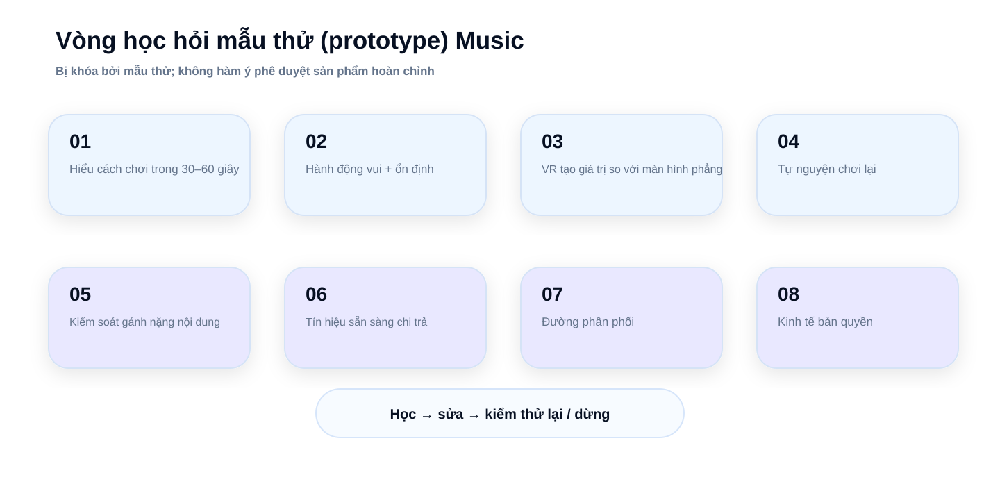
Đồ họa ngữ nghĩa phục vụ diễn giải; không phải bằng chứng độc lập.
Hình minh họa
Hình minh họa trải nghiệm âm nhạc/tiết tấu nhập vai bằng cử động cơ thể và tương tác không gian.
WEB-13
Vai trò danh mục: học trước, giữ quyền lựa chọn, chưa mở rộng quy mô
Mỗi cơ hội cuối đang giữ vai trò gì trong danh mục?
Vai trò danh mục là phân loại hành động, không phải điểm xác suất hay tỷ trọng ngân sách: kiểm chứng ngay, theo điều kiện, hướng thách thức/khám phá, dự phòng hoặc theo dõi/đối tác.
KHÔNG DÙNG ĐIỂM GIẢ
Vai trò trong danh mục
Hỗn hợp
Chứng minh: Phân loại vai trò hiện tại.
Không chứng minh: Không phải phân bổ vốn.
Chỉ dùng vai trò phân loại; không tạo điểm bong bóng, xác suất, tỷ trọng ngân sách hay phân bổ nhân sự.
TRÌNH TỰ
Học trước khi mở rộng
Hỗn hợp
Chứng minh: Nguyên tắc trình tự thực thi.
Không chứng minh: Không ấn định lịch hoặc ngân sách cố định.
Các kiểm chứng chính đi trước; hướng theo điều kiện/thách thức chỉ tiến khi có điều kiện kích hoạt có tên.
KIỂM CHỨNG NGAY
HealthcareĐẦU TƯ ĐỂ GIA NHẬP — có điều kiện kiểm chứng
Hạng #1 B2B/B2G bên ngoài và có đường mua tổ chức nhận diện được, nhưng SAVA chưa có bằng chứng về thẩm quyền chuyên môn/người mua.
Điều kiện tiến: Vượt sáu cổng Healthcare tới kinh tế đo được.
Chưa được phê duyệt: Không xây sản phẩm Healthcare quy mô đầy đủ hoặc thủ thuật lâm sàng cụ thể.
MusicĐẦU TƯ ĐỂ GIA NHẬP — có điều kiện bản thử nghiệm
Hạng #2 B2C bên ngoài nhưng là ưu tiên kiểm chứng #1 của SAVA do độ gần tương đối; hành động cốt lõi/chơi lại vẫn chưa được chứng minh.
Điều kiện tiến: Bản thử nghiệm vượt các cổng hành động, chơi lại, giá trị riêng của VR, tạo nội dung, sẵn sàng trả tiền, phân phối và quyền.
Chưa được phê duyệt: Không xây trò chơi đầy đủ, danh mục nhạc lớn, thế giới liên tục hoặc nền tảng.
THEO ĐIỀU KIỆN / KÍCH HOẠT
WarehouseLỰA CHỌN THEO ĐIỀU KIỆN
Vấn đề quyết định rõ và kiểm tra được, nhưng phải có dữ liệu thật, người mua và giả thuyết tái sử dụng trước khi hình thành đội.
Điều kiện tiến: Có vấn đề kho thật + dữ liệu đại diện + người mua chịu trách nhiệm + giả thuyết lớp tái sử dụng.
Chưa được phê duyệt: Không mở đội DES/nền tảng thường trực.
HƯỚNG THÁCH THỨC / KHÁM PHÁ
PuzzleHƯỚNG THÁCH THỨC NHỎ
Có thể kiểm tra với phạm vi nhỏ, nhưng giá trị riêng của VR và chơi lại sau lần giải đầu chưa được chứng minh.
Điều kiện tiến: Giá trị riêng của VR + chơi lại sau lần giải đầu vượt kiểm chứng có giới hạn.
Chưa được phê duyệt: Không làm chậm Healthcare/Music hoặc mở rộng sản xuất nội dung.
SportsTÌM NGÁCH HÀNH ĐỘNG
Hạng #1 bên ngoài nhưng SAVA chưa chọn môn/ngách hành động và chưa chứng minh chất lượng tương tác chuyên biệt.
Điều kiện tiến: Có hành động cơ thể khác biệt + tương tác đáng tin + chơi lại.
Chưa được phê duyệt: Không chọn môn hoặc phê duyệt trò chơi đầy đủ theo trực giác.
THEO DÕI / ĐỐI TÁC
Virtual CommissioningLỰA CHỌN CHIẾN LƯỢC
Luận điểm thị trường mạnh nhưng khoảng trống PLC/OT/tích hợp lớn và có hệ sinh thái nhà cung cấp hiện hữu mạnh.
Điều kiện tiến: Có đối tác controls/SI/OEM + trường hợp sử dụng + lớp giá trị SAVA sở hữu.
Chưa được phê duyệt: Không xây toàn bộ stack controls/OT/CAD.
LBETHEO DÕI / HƯỚNG ĐỐI TÁC
Giá trị riêng của VR mạnh nhưng kinh tế địa điểm, capex và vận hành biến động đáng kể.
Điều kiện tiến: Có đường đối tác nhẹ tài sản + kinh tế địa điểm độc lập.
Chưa được phê duyệt: Không đầu tư địa điểm/capex lớn.
DỰ PHÒNG
Broadcast realtime 3DDỰ PHÒNG
Mô hình phần mềm doanh nghiệp nhiều năm rõ nhưng có rào cản lớn về nhà cung cấp hiện hữu, độ tin cậy và chuyển đổi.
Điều kiện tiến: Có ngách người mới đáng tin + bằng chứng độ tin cậy/quy trình/tiếp cận.
Chưa được phê duyệt: Không lập đội sản phẩm broadcast chuyên dụng.
Construction Visual IntelligenceDỰ PHÒNG
Quy trình lặp lại tồn tại, nhưng bằng chứng độc lập về thanh toán/gia hạn và khả năng tiếp cận của SAVA còn yếu.
Điều kiện tiến: Có thanh toán lặp lại độc lập + tiếp cận SAVA + kết quả quy thuộc.
Chưa được phê duyệt: Không xây nền tảng chỉ vì SAVA có năng lực 3D.
Immersive LanguageDỰ PHÒNG
Nhu cầu học thật và có bằng chứng học thuật, nhưng duy trì trả phí, giá trị tăng thêm từ không gian và khác biệt hóa còn mở.
Điều kiện tiến: Có duy trì trả phí + giá trị tăng thêm từ không gian + lợi thế SAVA.
Chưa được phê duyệt: Không xây curriculum/nội dung lớn.
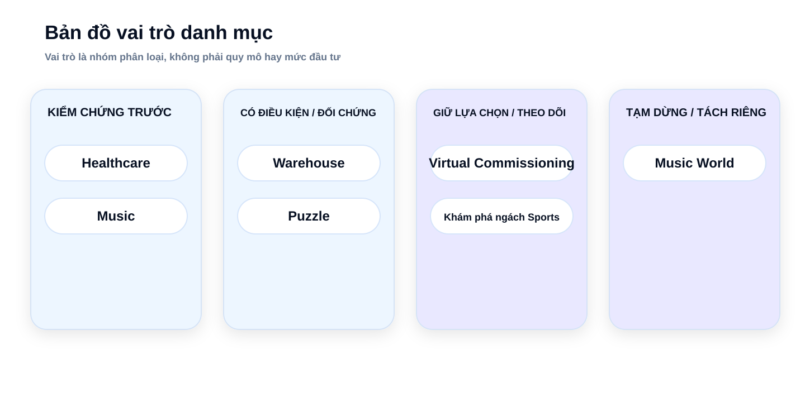
Đồ họa ngữ nghĩa phục vụ diễn giải; không phải bằng chứng độc lập.
WEB-14
Music World: tách sản phẩm cũ khỏi thesis Music mới
Music World cũ liên quan thế nào đến Music mới?
Phải giữ riêng ba đối tượng quyết định: cơ hội Music bên ngoài, luận điểm rhythm/action mới và sản phẩm Music World hiện hữu.
KHÓA NGỮ NGHĨA
Cơ hội Music ≠ luận điểm Music mới ≠ Music World
Hỗn hợp
Chứng minh: Ba đối tượng quyết định tách biệt.
Không chứng minh: Quan hệ nguồn gốc không đồng nghĩa phải tiếp tục sản phẩm.
A) Cơ hội Music theo thị trường bên ngoài. B) Luận điểm rhythm/action mastery mới. C) Music World hiện hữu.
SẢN PHẨM HIỆN HỮU
Music World độc lập: TẠM DỪNG
Hỗn hợp
Chứng minh: Cách xử lý hiện tại.
Không chứng minh: Không tự động loại bỏ mọi tài sản của sản phẩm cũ.
Toàn bộ sản phẩm chỉ được dùng làm THAM CHIẾU trong nhánh này.
KIỂM TOÁN TRƯỚC
Tái sử dụng có điều kiện
Hỗn hợp
Chứng minh: Ranh giới tái sử dụng.
Không chứng minh: Chưa xác lập tỷ lệ tái sử dụng, tiết kiệm chi phí hoặc chuyển giao tài sản được phê duyệt.
Bất kỳ việc tái sử dụng mã/tài sản/công cụ nào đều cần kiểm toán kỹ thuật, sở hữu trí tuệ, giấy phép và nghĩa vụ. Báo cáo hiện tại chưa xác nhận tài sản cụ thể nào có thể tái sử dụng.
SẢN PHẨM CŨ
Music World hiện tại
TẠM DỪNG
CHỈ DÙNG LÀM THAM CHIẾU
LUẬN ĐIỂM SẢN PHẨM MỚI
Music rhythm/action
Kiểm chứng bằng bản thử nghiệm trước
Hệ thống · chơi một mình · làm chủ kỹ năng · chơi lại
mã nguồnkiến trúcIPgiấy phépphụ thuộcnghĩa vụkiểm toán khả năng chuyển đổi
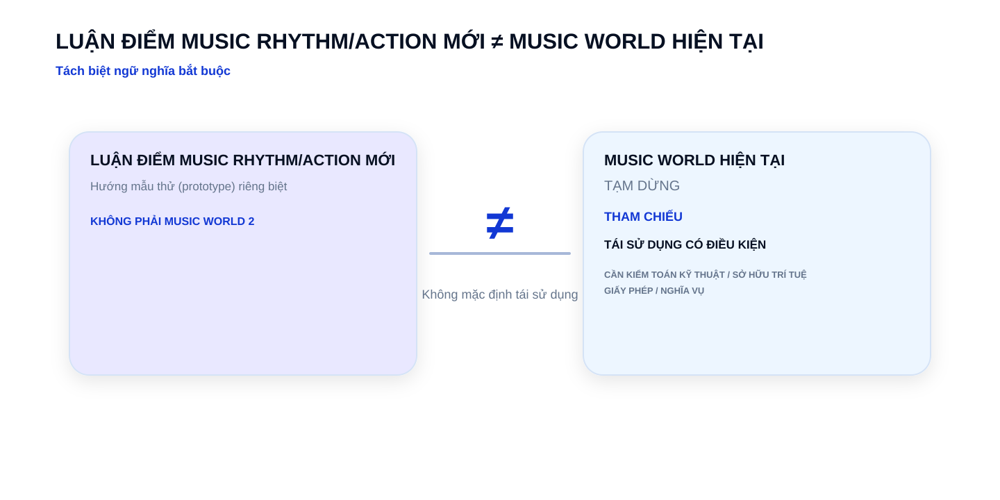
Đồ họa ngữ nghĩa phục vụ diễn giải; không phải bằng chứng độc lập.
WEB-15
Điều có thể làm luận điểm sai
Bằng chứng nào có thể đảo hoặc làm chậm quyết định?
Bằng chứng phản biện là đối tượng hạng nhất; tín hiệu tích cực không được hiển thị mà thiếu trần diễn giải và điều kiện làm chậm/dừng tương ứng.
CÓ THỂ THAY ĐỔI QUYẾT ĐỊNH
Sổ bằng chứng phản biện
Hỗn hợp
Chứng minh: Bằng chứng có thể bác bỏ/đảo luận điểm được hiển thị để kiểm tra.
Không chứng minh: Bằng chứng phản biện không phải điểm tự động loại bỏ.
14 bản ghi phản biện có cấu trúc được hiển thị cùng tín hiệu, trần diễn giải, hệ quả quyết định và điều kiện làm chậm/dừng.
TRƯỜNG HỢP PHẢN BIỆN / BÊN THỨ BA
~5 tháng
Trường hợp phản chứng / bên thứ ba
Chứng minh: Trường hợp phản biện cục bộ.
Không chứng minh: Không chứng minh tỷ lệ thất bại toàn ngành.
khoảng 5 thángKhoảng thời gian địa điểm Frisco đóng cửa
Khoảng thời gian đóng cửa của một địa điểm tại Frisco cho thấy kinh tế địa điểm có thể thay đổi nhanh.
SỐ LIỆU DO DOANH NGHIỆP CÔNG BỐ
150 triệu người chơi trọn đời; hàng triệu người dùng hàng tháng; bối cảnh đóng cửa
Số liệu do doanh nghiệp công bố
Chứng minh: Quy mô sử dụng không đồng nghĩa kinh tế bền vững.
Không chứng minh: Không chứng minh mọi sản phẩm xã hội đều thất bại.
150 triệu người chơi trọn đờiQuy mô người chơi trọn đời Rec Room
hàng triệu người dùng mỗi thángQuy mô người dùng hàng tháng Rec Room
Quy mô sử dụng lớn được công bố có thể đồng thời tồn tại với kinh tế không bền vững.
HealthcareNghiên cứu học thuật
TÍN HIỆU
Kết quả học thuật không đồng nhất; mức hiệu quả phụ thuộc bối cảnh, chương trình đào tạo và trường hợp sử dụng.
GIỚI HẠN DIỄN GIẢI
Không chứng minh VR Healthcare là không hiệu quả.
HÀM Ý QUYẾT ĐỊNH
Giữ cổng đối tác/thẩm quyền chuyên môn và đo kết quả theo trường hợp sử dụng cụ thể.
Virtual CommissioningTình huống do nhà cung cấp công bố
TÍN HIỆU
Trường hợp do nhà cung cấp công bố mạnh nhưng không độc lập; PLC/OT, độ chính xác mô hình, hệ sinh thái nhà cung cấp hiện hữu là khoảng trống lớn.
GIỚI HẠN DIỄN GIẢI
Không phải mức trung bình thị trường, chuẩn ROI độc lập hay bằng chứng năng lực của SAVA.
HÀM Ý QUYẾT ĐỊNH
Giữ THEO DÕI / LỰA CHỌN CHIẾN LƯỢC; chỉ mở lại khi có đối tác và lớp giá trị SAVA sở hữu.
WarehouseTình huống do nhà cung cấp công bố
TÍN HIỆU
Gánh nặng dữ liệu, hiệu chuẩn và xác nhận mô hình; người mua, thanh toán và khả năng lặp lại chưa chắc.
GIỚI HẠN DIỄN GIẢI
Không chứng minh mô phỏng kho không thể đóng gói thành sản phẩm.
HÀM Ý QUYẾT ĐỊNH
Chỉ kích hoạt theo điều kiện; không mở đội thường trực trước khi có vấn đề thực, dữ liệu và người mua.
BroadcastMua sắm / hợp đồng chính thức
TÍN HIỆU
Độ tin cậy, chi phí chuyển đổi và quan hệ với nhà cung cấp hiện hữu tạo ma sát gia nhập cao.
GIỚI HẠN DIỄN GIẢI
Không chứng minh thị trường kém hấp dẫn hoặc SAVA không thể gia nhập.
HÀM Ý QUYẾT ĐỊNH
Giữ DỰ PHÒNG cho tới khi có ngách cho người mới và bằng chứng SAVA đáp ứng độ tin cậy/tiếp cận.
Construction Visual IntelligenceSố liệu do doanh nghiệp công bố
TÍN HIỆU
Bằng chứng chủ yếu do nhà cung cấp công bố; thanh toán độc lập, gia hạn và kết quả quy thuộc còn yếu.
GIỚI HẠN DIỄN GIẢI
Không chứng minh quy trình này không có giá trị.
HÀM Ý QUYẾT ĐỊNH
Giữ DỰ PHÒNG; yêu cầu bằng chứng độc lập về thanh toán/gia hạn lặp lại và khả năng tiếp cận.
SportsHỗn hợp
TÍN HIỆU
Đối thủ chuyên biệt mạnh; môn/ngách và chất lượng tương tác của SAVA chưa được giải quyết.
GIỚI HẠN DIỄN GIẢI
Không làm thay đổi hạng #1 bên ngoài.
HÀM Ý QUYẾT ĐỊNH
Chỉ khám phá ngách; không chọn môn cụ thể hoặc xây trò chơi đầy đủ khi chưa có hành động khác biệt.
MusicHỗn hợp
TÍN HIỆU
Vòng đời nền tảng, quyền âm nhạc, gánh nặng tạo nội dung, độ tin cậy input/timing và phân phối có thể làm luận điểm thất bại.
GIỚI HẠN DIỄN GIẢI
Không chứng minh nhóm rhythm đã thất bại hoặc SAVA phải cấp phép danh mục nhạc lớn.
HÀM Ý QUYẾT ĐỊNH
Bản thử nghiệm trước, dùng nhạc an toàn về quyền; chứng minh vòng lặp trước khi mở rộng cấp phép.
PuzzleHỗn hợp
TÍN HIỆU
Rủi ro chơi một lần, sản phẩm phẳng thay thế và khả năng được khám phá trên cửa hàng.
GIỚI HẠN DIỄN GIẢI
Không chứng minh puzzle trả phí không thể thành công.
HÀM Ý QUYẾT ĐỊNH
Chỉ giữ hướng thách thức nhỏ nếu giá trị riêng của VR và chơi lại sau lần giải đầu vượt kiểm chứng.
Immersive LanguageNghiên cứu học thuật
TÍN HIỆU
Kết quả học thuật không chứng minh duy trì trả phí; giải pháp mobile/AI/gia sư là thay thế mạnh.
GIỚI HẠN DIỄN GIẢI
Không chứng minh học ngoại ngữ trong VR là không hiệu quả.
HÀM Ý QUYẾT ĐỊNH
Giữ DỰ PHÒNG tới khi đo được duy trì trả phí + giá trị tăng thêm từ không gian + lợi thế SAVA.
LBETrường hợp phản chứng / bên thứ ba
TÍN HIỆU
Địa điểm Frisco đóng sau khoảng năm tháng là một trường hợp phản biện cục bộ.
GIỚI HẠN DIỄN GIẢI
Không phải tỷ lệ thất bại toàn ngành.
HÀM Ý QUYẾT ĐỊNH
THEO DÕI / ĐỐI TÁC; yêu cầu kinh tế địa điểm độc lập và đường nhẹ tài sản.
VR FitnessSố liệu do doanh nghiệp công bố
TÍN HIỆU
FitXR công bố thư viện hơn 1.000 bài tập cùng nhịp bổ sung nội dung liên tục.
GIỚI HẠN DIỄN GIẢI
Không chứng minh FitXR thất bại về duy trì.
HÀM Ý QUYẾT ĐỊNH
Không ưu tiên nếu chưa thấy kinh tế nội dung và duy trì trả phí.
Spatial ProductivitySố liệu do doanh nghiệp công bố
TÍN HIỆU
Immersed công bố khoảng 1,5 triệu người dùng phần mềm duy nhất, nhưng quy mô người dùng công bố không phải người dùng trả phí hoạt động hoặc lợi nhuận.
GIỚI HẠN DIỄN GIẢI
Không chứng minh nhóm sản phẩm không khả thi.
HÀM Ý QUYẾT ĐỊNH
Không dùng quy mô làm bằng chứng thương mại đủ.
3D CommerceSố liệu do doanh nghiệp công bố
TÍN HIỆU
Houzz công bố hơn 1 triệu người dùng AR và tương quan với hành vi.
GIỚI HẠN DIỄN GIẢI
Không xác lập tác động chuyển đổi mang tính nhân quả hoặc mức sẵn sàng trả tiền độc lập.
HÀM Ý QUYẾT ĐỊNH
Không ưu tiên khi chưa có quy thuộc nhân quả/thương mại.
Social/UGCSố liệu do doanh nghiệp công bố
TÍN HIỆU
Rec Room công bố quy mô rất lớn đồng thời có thông báo đóng cửa gắn với kinh tế không bền vững.
GIỚI HẠN DIỄN GIẢI
Không có nghĩa mọi sản phẩm social VR đều thất bại.
HÀM Ý QUYẾT ĐỊNH
Không dùng quy mô người dùng làm lý do đủ để vào luận điểm nền tảng/xã hội.
WEB-16
Sổ bằng chứng định lượng
Mỗi con số được phép chứng minh đến đâu?
32 chỉ số bằng chứng nguyên tử được chuẩn hóa về ID theo nguồn; 25 đối tượng định lượng của V1A là lớp trình bày, trong đó một số đối tượng gộp nhiều chỉ số. Mỗi chỉ số có lớp bằng chứng và trần diễn giải.
SỔ BẰNG CHỨNG
25 đối tượng định lượng hiển thị
Hỗn hợp
Chứng minh: Sổ con số website đầy đủ.
Không chứng minh: Không tạo điểm tổng hợp, TAM hoặc dự báo.
25 đối tượng trình bày của V1A ánh xạ đầy đủ tới 32 chỉ số bằng chứng nguyên tử có ID theo nguồn và trần diễn giải.
NGỮ NGHĨA CON SỐ
Mỗi con số đều có trần diễn giải
Hỗn hợp
Chứng minh: Ngăn diễn giải vượt quá bằng chứng.
Không chứng minh: Không biến loại bằng chứng thành điểm độ tin cậy.
Hai câu hỏi bắt buộc cạnh chỉ số: CON SỐ NÀY CHO THẤY GÌ? và CON SỐ NÀY CHƯA CHỨNG MINH ĐƯỢC GÌ?
SỐ LIỆU CHƯƠNG TRÌNH
Số bản ghi trong vũ trụ cơ hội
SỐ LIỆU CHƯƠNG TRÌNH112 = 96 bản ghi có thể xếp hạng + 16 nhóm bao trùm / không xếp hạng.
Chứng minh: Universe của chương trình có 112 bản ghi truy vết.
Không chứng minh: Không đồng nghĩa quy mô thị trường và không bằng phép cộng 65+32 của hai nhánh thực thi.
112Số bản ghi trong vũ trụ cơ hội
112
SỐ LIỆU CHƯƠNG TRÌNH
Số bản ghi cơ hội có thể xếp hạng
SỐ LIỆU CHƯƠNG TRÌNHLà tập con của 112 bản ghi.
Chứng minh: 96 trong 112 bản ghi có thể xếp hạng.
Không chứng minh: Không đồng nghĩa số đơn vị trong các nhánh B2B/B2C thực thi.
96Số bản ghi cơ hội có thể xếp hạng
96
SỐ LIỆU CHƯƠNG TRÌNH
Số bản ghi bao trùm / không xếp hạng
SỐ LIỆU CHƯƠNG TRÌNHLà tập con của 112 bản ghi.
Chứng minh: 16 trong 112 bản ghi là nhóm bao trùm / không xếp hạng.
Không chứng minh: Không đại diện cho số finalist bị loại.
16Số bản ghi bao trùm / không xếp hạng
16
SỐ LIỆU CHƯƠNG TRÌNH
Quy trình sàng lọc B2B/B2G
SỐ LIỆU CHƯƠNG TRÌNHThứ hạng finalist đã khóa; số 3 ở bước phân tích sâu không phải phê duyệt đầu tư.
Chứng minh: Nhánh B2B/B2G thực thi thu hẹp từ 65 xuống 12, rồi 5 và 3.
Không chứng minh: Không phải tỷ lệ chuyển đổi của thị trường và không đồng nghĩa phê duyệt đầu tư.
65 → 12 → 5 → 3Quy trình sàng lọc B2B/B2G
65 → 12 → 5 → 3
SỐ LIỆU CHƯƠNG TRÌNH
Quy trình sàng lọc B2C
SỐ LIỆU CHƯƠNG TRÌNHKhông cộng 32 với 65 để suy ra universe = 97.
Chứng minh: Nhánh B2C thực thi thu hẹp từ 32 xuống 11, rồi 5 và 3.
Không chứng minh: Không phải tỷ lệ chuyển đổi của thị trường và không đồng nghĩa cam kết sản phẩm.
32 → 11 → 5 → 3Quy trình sàng lọc B2C
32 → 11 → 5 → 3
MUA SẮM / HỢP ĐỒNG CHÍNH THỨC
Giá trị hợp đồng cuối cùng ORF–Vizrt giai đoạn 2026–2028
Mua sắm / hợp đồng chính thứcĐây là giá trị toàn thỏa thuận; phải giữ phạm vi 2026–2028.
Chứng minh: Tồn tại một đối tượng mua sắm tổ chức nhiều năm với giá trị hợp đồng cuối cùng này.
Không chứng minh: Không chứng minh giá trị hợp đồng thường niên của phần mềm thuần, khoản thực trả, quy mô thị trường hoặc doanh thu SAVA có thể đạt.
EUR 3.485.539,20Giá trị hợp đồng cuối cùng ORF–Vizrt giai đoạn 2026–2028
EUR 3.485.539,20
TRƯỜNG HỢP DO NHÀ CUNG CẤP CÔNG BỐ
Mức giảm thời gian lắp đặt / đưa vào vận hành
Tình huống do nhà cung cấp công bốPhải giữ nguyên điều kiện 'tới 50%'.
Chứng minh: Một trường hợp cụ thể do nhà cung cấp công bố báo cáo mức giảm thời gian đưa vào vận hành đáng kể.
Không chứng minh: Không phải chuẩn ROI độc lập và không chứng minh mức tiết kiệm phổ quát.
tối đa 50%Mức giảm thời gian lắp đặt / đưa vào vận hành
tối đa 50%
TRƯỜNG HỢP DO NHÀ CUNG CẤP CÔNG BỐ
Số dự án đang triển khai trong bối cảnh tiếp nối
Tình huống do nhà cung cấp công bốLà thông tin trong một trường hợp do nhà cung cấp công bố.
Chứng minh: Nguồn cho thấy có hoạt động dự án tiếp nối trong cùng bối cảnh trường hợp.
Không chứng minh: Không chứng minh tỷ lệ mua lại, doanh thu hay biên lợi nhuận.
3 dự ánSố dự án đang triển khai trong bối cảnh tiếp nối
3 dự án
GIÁ NIÊM YẾT CHÍNH THỨC
Giá niêm yết cơ bản của GOLF+
Giá niêm yết chính thứcLà giá niêm yết, không phải giá trị doanh thu thực nhận.
Chứng minh: Cho thấy tồn tại cấu trúc sản phẩm VR thể thao trả phí.
Không chứng minh: Không chứng minh số bản bán, doanh thu thực nhận hoặc mức sẵn sàng trả tiền cho sản phẩm SAVA.
khoảng USD 29,99Giá niêm yết cơ bản của GOLF+
khoảng USD 29,99
GIÁ NIÊM YẾT CHÍNH THỨC
Số sân / lựa chọn trong GOLF+ Pass / Giá niêm yết GOLF+ Pass theo tháng / Giá niêm yết GOLF+ Pass theo năm
Giá niêm yết chính thứcLà mô tả sản phẩm / nội dung do nguồn chính thức công bố.; Giá niêm yết chính thức.
Chứng minh: Nguồn chính thức công bố GOLF+ Pass có hơn 40 lựa chọn.; Cho thấy tồn tại lựa chọn thuê bao theo tháng.; Cho thấy tồn tại lựa chọn thuê bao theo năm.
Không chứng minh: Không chứng minh số người đăng ký hoặc khả năng giữ chân.; Không chứng minh ARPU, giá thực nhận hoặc tỷ lệ chuyển đổi sang trả tiền.; Không chứng minh khả năng giữ chân, số người đăng ký hoặc doanh thu thực nhận.
hơn 40 sân golfSố sân / lựa chọn trong GOLF+ Pass
USD 9,99/thángGiá niêm yết GOLF+ Pass theo tháng
USD 99,99/nămGiá niêm yết GOLF+ Pass theo năm
hơn 40 sân golf; USD 9,99/tháng; USD 99,99/năm
GIÁ NIÊM YẾT CHÍNH THỨC
Giá niêm yết Racket Club
Giá niêm yết chính thứcGiá niêm yết chính thức trên cửa hàng.
Chứng minh: Cho thấy tồn tại một tựa VR thể thao / kỹ năng trả phí ở mức giá niêm yết này.
Không chứng minh: Không chứng minh doanh số hoặc khả năng giữ chân.
USD 24,99Giá niêm yết Racket Club
USD 24,99
GIÁ NIÊM YẾT CHÍNH THỨC
Giá niêm yết gói nhạc Synth Riders
Giá niêm yết chính thứcGiá sản phẩm chính thức; không phải bằng chứng mức sẵn sàng trả tiền cho SAVA.
Chứng minh: Cho thấy tồn tại cấu trúc DLC / gói nhạc trả phí.
Không chứng minh: Không chứng minh tỷ lệ mua thêm, doanh thu, biên lợi nhuận hoặc kinh tế quyền âm nhạc.
Giá niêm yết chính thứcGiá niêm yết / press kit chính thức.
Chứng minh: Cho thấy tồn tại cấu trúc sản phẩm giải đố VR cao cấp trả phí.
Không chứng minh: Không chứng minh doanh số, khả năng giữ chân hoặc WHY-VR của ý tưởng SAVA.
USD 9,99Giá niêm yết Cubism
USD 9,99
GIÁ NIÊM YẾT CHÍNH THỨC
Giá niêm yết cơ bản Puzzling Places
Giá niêm yết chính thứcGiá niêm yết chính thức trên cửa hàng.
Chứng minh: Cho thấy tồn tại thêm một mức giá trả phí trong nhóm giải đố VR.
Không chứng minh: Không chứng minh doanh số, khả năng giữ chân hoặc nhu cầu đối với SAVA.
USD 19,99Giá niêm yết cơ bản Puzzling Places
USD 19,99
BẰNG CHỨNG HỖN HỢP
Giá mua một lần của Noun Town / Số ngôn ngữ Noun Town hỗ trợ / Số người chơi Noun Town do doanh nghiệp công bố
Hỗn hợpPhần giá là bằng chứng sản phẩm chính thức.; Chỉ phản ánh độ rộng tính năng.; Phải giữ nguyên điều kiện 'hơn'; đây là số liệu do doanh nghiệp công bố.
Chứng minh: Cho thấy tồn tại cấu trúc sản phẩm học ngoại ngữ VR trả phí một lần.; Nguồn hiện tại cho biết sản phẩm hỗ trợ 12 ngôn ngữ.; Doanh nghiệp công bố quy mô người chơi trên 200 nghìn.
Không chứng minh: Không chứng minh khả năng giữ chân hoặc doanh thu thực nhận.; Không chứng minh hiệu quả học tập hoặc thành công thương mại.; Không chứng minh số người trả tiền, doanh thu, khả năng giữ chân hoặc quy mô độc lập.
USD 19,99Giá mua một lần của Noun Town
12 ngôn ngữSố ngôn ngữ Noun Town hỗ trợ
hơn 200.000 người chơiSố người chơi Noun Town do doanh nghiệp công bố
USD 19,99; 12 ngôn ngữ; hơn 200.000 người chơi
BẰNG CHỨNG HỌC THUẬT
Số RCT trong phân tích gộp về học ngoại ngữ
Nghiên cứu học thuậtBằng chứng học thuật có trần diễn giải thương mại.
Chứng minh: Phân tích gộp được trích dẫn tổng hợp 41 RCT.
Không chứng minh: Không chứng minh hiệu quả phổ quát, khả năng giữ chân người dùng trả phí hoặc ưu thế thương mại.
41 RCTSố RCT trong phân tích gộp về học ngoại ngữ
41 RCT
SỐ LIỆU DO DOANH NGHIỆP CÔNG BỐ
Giá khởi điểm hệ thống Zero Latency / Tỷ lệ chia sẻ doanh thu Zero Latency
Số liệu do doanh nghiệp công bốGiá hệ thống xấp xỉ; không phải hiệu quả kinh tế thực nhận.; Là điều khoản thương mại, không phải biên lợi nhuận.
Chứng minh: Cho thấy tồn tại cấu trúc thương mại kiểu đầu tư hệ thống giữa nhà cung cấp và đơn vị vận hành.; Cho thấy tồn tại điều khoản chia sẻ doanh thu theo vé.
Không chứng minh: Không chứng minh lợi nhuận hoặc thời gian hoàn vốn của đơn vị vận hành.; Không chứng minh lợi nhuận cấp địa điểm hoặc kinh tế của SAVA.
khoảng USD 165.000Giá khởi điểm hệ thống Zero Latency
16% doanh thu véTỷ lệ chia sẻ doanh thu Zero Latency
khoảng USD 165.000; 16% doanh thu vé
SỐ LIỆU DO DOANH NGHIỆP CÔNG BỐ
Quy mô mạng lưới Zero Latency / Số lượt chơi tích lũy Zero Latency
Số liệu do doanh nghiệp công bốSố liệu do doanh nghiệp công bố; giữ nguyên dấu 'hơn'.
Chứng minh: Doanh nghiệp công bố mạng lưới trên 120 địa điểm.; Doanh nghiệp công bố hơn 5 triệu lượt chơi tích lũy.
Không chứng minh: Không chứng minh số địa điểm có lãi hoặc quy mô thị trường độc lập.; Không chứng minh số người dùng duy nhất, tỷ lệ chơi lại hoặc kinh tế đơn vị.
hơn 120 địa điểmQuy mô mạng lưới Zero Latency
hơn 5 triệu lượt chơiSố lượt chơi tích lũy Zero Latency
hơn 120 địa điểm; hơn 5 triệu lượt chơi
TRƯỜNG HỢP PHẢN BIỆN / BÊN THỨ BA
Khoảng thời gian địa điểm Frisco đóng cửa
Trường hợp phản chứng / bên thứ baTrường hợp địa phương đơn lẻ; không phải ước tính xác suất cơ sở.
Chứng minh: Một trường hợp cụ thể cho thấy địa điểm đóng khoảng 5 tháng trước khi mở lại.
Không chứng minh: Không phải tỷ lệ thất bại của toàn ngành.
khoảng 5 thángKhoảng thời gian địa điểm Frisco đóng cửa
khoảng 5 tháng
SỐ LIỆU DO DOANH NGHIỆP CÔNG BỐ
Quy mô thư viện bài tập FitXR
Số liệu do doanh nghiệp công bốQuy mô nội dung do doanh nghiệp công bố.
Chứng minh: Cho thấy gánh nặng vận hành / nhịp độ nội dung có thể lớn.
Không chứng minh: Không chứng minh khả năng giữ chân hoặc số người đăng ký.
hơn 1.000 bài tậpQuy mô thư viện bài tập FitXR
hơn 1.000 bài tập
SỐ LIỆU DO DOANH NGHIỆP CÔNG BỐ
Số người dùng phần mềm duy nhất của Immersed
Số liệu do doanh nghiệp công bốSố liệu do tổ chức phát hành / doanh nghiệp công bố.
Chứng minh: Doanh nghiệp công bố quy mô người dùng phần mềm đáng kể.
Không chứng minh: Không chứng minh số người dùng trả phí đang hoạt động hoặc lợi nhuận.
khoảng 1,5 triệu người dùng phần mềm duy nhấtSố người dùng phần mềm duy nhất của Immersed
khoảng 1,5 triệu người dùng phần mềm duy nhất
SỐ LIỆU DO DOANH NGHIỆP CÔNG BỐ
Số người dùng AR của Houzz
Số liệu do doanh nghiệp công bốTín hiệu sử dụng / tương quan; không phải bằng chứng nhân quả.
Chứng minh: Doanh nghiệp công bố mức sử dụng AR trên 1 triệu người dùng.
Không chứng minh: Không chứng minh quan hệ nhân quả với tăng chuyển đổi hoặc mức sẵn sàng trả tiền.
hơn 1 triệu người dùng ARSố người dùng AR của Houzz
hơn 1 triệu người dùng AR
SỐ LIỆU DO DOANH NGHIỆP CÔNG BỐ
Quy mô người chơi trọn đời Rec Room / Quy mô người dùng hàng tháng Rec Room
Số liệu do doanh nghiệp công bốCông bố của doanh nghiệp kèm cảnh báo về tính bền vững.; Giữ nguyên cách diễn đạt không chính xác của nguồn.
Chứng minh: Cho thấy quy mô người dùng trọn đời rất lớn do doanh nghiệp công bố có thể cùng tồn tại với quyết định đóng dịch vụ.; Doanh nghiệp công bố quy mô hàng tháng ở mức hàng triệu người dùng.
Không chứng minh: Không chứng minh kinh tế đơn vị bền vững hoặc thành công của mọi sản phẩm xã hội.; Không cung cấp MAU chính xác, số người trả tiền hoặc lợi nhuận.
150 triệu người chơi trọn đờiQuy mô người chơi trọn đời Rec Room
hàng triệu người dùng mỗi thángQuy mô người dùng hàng tháng Rec Room
150 triệu người chơi trọn đời; hàng triệu người dùng mỗi tháng
DỮ LIỆU NỘI BỘ ĐÃ GHI NHẬN
Số vai trò Savrse trong kiểm toán năng lực
Tài liệu nội bộKhông cộng với số nhân sự toàn công ty trên 80.
Chứng minh: Danh sách kiểm toán năng lực ghi nhận 27 vai trò liên quan.
Không chứng minh: Không chứng minh nhân sự quy đổi toàn thời gian có thể phân bổ, công suất trống, mức sử dụng hoặc mức làm chủ chuyên môn.
27Số vai trò Savrse trong kiểm toán năng lực
27
DỮ LIỆU NỘI BỘ ĐÃ GHI NHẬN
Quy mô nhân sự toàn công ty SAVA
Tài liệu nội bộLà bản ghi ngữ nghĩa riêng với danh sách 27 vai trò; URL nguồn chưa có trong báo cáo hiện tại.
Chứng minh: Hồ sơ công ty báo cáo quy mô nhân sự toàn công ty trên 80 người.
Không chứng minh: Không chứng minh quy mô đội Savrse có thể phân bổ hoặc công suất của BU.
>80Quy mô nhân sự toàn công ty SAVA
>80
Đang hiển thị 32 / 32
112Tài liệu nội bộ
Số bản ghi trong vũ trụ cơ hội
số liệu chương trình chính xác
Chứng minh: Universe của chương trình có 112 bản ghi truy vết.
Không chứng minh: Không đồng nghĩa quy mô thị trường và không bằng phép cộng 65+32 của hai nhánh thực thi.
112 = 96 bản ghi có thể xếp hạng + 16 nhóm bao trùm / không xếp hạng.
96Tài liệu nội bộ
Số bản ghi cơ hội có thể xếp hạng
số liệu chương trình chính xác
Chứng minh: 96 trong 112 bản ghi có thể xếp hạng.
Không chứng minh: Không đồng nghĩa số đơn vị trong các nhánh B2B/B2C thực thi.
Là tập con của 112 bản ghi.
16Tài liệu nội bộ
Số bản ghi bao trùm / không xếp hạng
số liệu chương trình chính xác
Chứng minh: 16 trong 112 bản ghi là nhóm bao trùm / không xếp hạng.
Không chứng minh: Không đại diện cho số finalist bị loại.
Là tập con của 112 bản ghi.
65 → 12 → 5 → 3Tài liệu nội bộ
Quy trình sàng lọc B2B/B2G
funnel chương trình
Chứng minh: Nhánh B2B/B2G thực thi thu hẹp từ 65 xuống 12, rồi 5 và 3.
Không chứng minh: Không phải tỷ lệ chuyển đổi của thị trường và không đồng nghĩa phê duyệt đầu tư.
Thứ hạng finalist đã khóa; số 3 ở bước phân tích sâu không phải phê duyệt đầu tư.
32 → 11 → 5 → 3Tài liệu nội bộ
Quy trình sàng lọc B2C
funnel chương trình
Chứng minh: Nhánh B2C thực thi thu hẹp từ 32 xuống 11, rồi 5 và 3.
Không chứng minh: Không phải tỷ lệ chuyển đổi của thị trường và không đồng nghĩa cam kết sản phẩm.
Không cộng 32 với 65 để suy ra universe = 97.
EUR 3.485.539,20Mua sắm / hợp đồng chính thức
Giá trị hợp đồng cuối cùng ORF–Vizrt giai đoạn 2026–2028
mua sắm chính thức
Chứng minh: Tồn tại một đối tượng mua sắm tổ chức nhiều năm với giá trị hợp đồng cuối cùng này.
Không chứng minh: Không chứng minh giá trị hợp đồng thường niên của phần mềm thuần, khoản thực trả, quy mô thị trường hoặc doanh thu SAVA có thể đạt.
Đây là giá trị toàn thỏa thuận; phải giữ phạm vi 2026–2028.
tối đa 50%Tình huống do nhà cung cấp công bố
Mức giảm thời gian lắp đặt / đưa vào vận hành
'tới'; trường hợp do nhà cung cấp công bố
Chứng minh: Một trường hợp cụ thể do nhà cung cấp công bố báo cáo mức giảm thời gian đưa vào vận hành đáng kể.
Không chứng minh: Không phải chuẩn ROI độc lập và không chứng minh mức tiết kiệm phổ quát.
Phải giữ nguyên điều kiện 'tới 50%'.
3 dự ánTình huống do nhà cung cấp công bố
Số dự án đang triển khai trong bối cảnh tiếp nối
trường hợp do nhà cung cấp công bố
Chứng minh: Nguồn cho thấy có hoạt động dự án tiếp nối trong cùng bối cảnh trường hợp.
Không chứng minh: Không chứng minh tỷ lệ mua lại, doanh thu hay biên lợi nhuận.
Là thông tin trong một trường hợp do nhà cung cấp công bố.
khoảng USD 29,99Giá niêm yết chính thức
Giá niêm yết cơ bản của GOLF+
xấp xỉ; giá niêm yết
Chứng minh: Cho thấy tồn tại cấu trúc sản phẩm VR thể thao trả phí.
Không chứng minh: Không chứng minh số bản bán, doanh thu thực nhận hoặc mức sẵn sàng trả tiền cho sản phẩm SAVA.
Là giá niêm yết, không phải giá trị doanh thu thực nhận.
hơn 40 sân golfGiá niêm yết chính thức
Số sân / lựa chọn trong GOLF+ Pass
hơn / 40+
Chứng minh: Nguồn chính thức công bố GOLF+ Pass có hơn 40 lựa chọn.
Không chứng minh: Không chứng minh số người đăng ký hoặc khả năng giữ chân.
Là mô tả sản phẩm / nội dung do nguồn chính thức công bố.
USD 9,99/thángGiá niêm yết chính thức
Giá niêm yết GOLF+ Pass theo tháng
giá niêm yết
Chứng minh: Cho thấy tồn tại lựa chọn thuê bao theo tháng.
Không chứng minh: Không chứng minh ARPU, giá thực nhận hoặc tỷ lệ chuyển đổi sang trả tiền.
Giá niêm yết chính thức.
USD 99,99/nămGiá niêm yết chính thức
Giá niêm yết GOLF+ Pass theo năm
giá niêm yết
Chứng minh: Cho thấy tồn tại lựa chọn thuê bao theo năm.
Không chứng minh: Không chứng minh khả năng giữ chân, số người đăng ký hoặc doanh thu thực nhận.
Giá niêm yết chính thức.
USD 24,99Giá niêm yết chính thức
Giá niêm yết Racket Club
giá niêm yết
Chứng minh: Cho thấy tồn tại một tựa VR thể thao / kỹ năng trả phí ở mức giá niêm yết này.
Không chứng minh: Không chứng minh doanh số hoặc khả năng giữ chân.
Giá niêm yết chính thức trên cửa hàng.
USD 7,99 / 5 bài hátGiá niêm yết chính thức
Giá niêm yết gói nhạc Synth Riders
giá niêm yết
Chứng minh: Cho thấy tồn tại cấu trúc DLC / gói nhạc trả phí.
Không chứng minh: Không chứng minh tỷ lệ mua thêm, doanh thu, biên lợi nhuận hoặc kinh tế quyền âm nhạc.
Giá sản phẩm chính thức; không phải bằng chứng mức sẵn sàng trả tiền cho SAVA.
USD 9,99Giá niêm yết chính thức
Giá niêm yết Cubism
giá niêm yết
Chứng minh: Cho thấy tồn tại cấu trúc sản phẩm giải đố VR cao cấp trả phí.
Không chứng minh: Không chứng minh doanh số, khả năng giữ chân hoặc WHY-VR của ý tưởng SAVA.
Giá niêm yết / press kit chính thức.
USD 19,99Giá niêm yết chính thức
Giá niêm yết cơ bản Puzzling Places
giá niêm yết
Chứng minh: Cho thấy tồn tại thêm một mức giá trả phí trong nhóm giải đố VR.
Không chứng minh: Không chứng minh doanh số, khả năng giữ chân hoặc nhu cầu đối với SAVA.
Giá niêm yết chính thức trên cửa hàng.
USD 19,99Hỗn hợp
Giá mua một lần của Noun Town
giá niêm yết
Chứng minh: Cho thấy tồn tại cấu trúc sản phẩm học ngoại ngữ VR trả phí một lần.
Không chứng minh: Không chứng minh khả năng giữ chân hoặc doanh thu thực nhận.
Phần giá là bằng chứng sản phẩm chính thức.
12 ngôn ngữHỗn hợp
Số ngôn ngữ Noun Town hỗ trợ
sản phẩm / doanh nghiệp công bố
Chứng minh: Nguồn hiện tại cho biết sản phẩm hỗ trợ 12 ngôn ngữ.
Không chứng minh: Không chứng minh hiệu quả học tập hoặc thành công thương mại.
Chỉ phản ánh độ rộng tính năng.
hơn 200.000 người chơiHỗn hợp
Số người chơi Noun Town do doanh nghiệp công bố
hơn; doanh nghiệp công bố
Chứng minh: Doanh nghiệp công bố quy mô người chơi trên 200 nghìn.
Không chứng minh: Không chứng minh số người trả tiền, doanh thu, khả năng giữ chân hoặc quy mô độc lập.
Phải giữ nguyên điều kiện 'hơn'; đây là số liệu do doanh nghiệp công bố.
41 RCTNghiên cứu học thuật
Số RCT trong phân tích gộp về học ngoại ngữ
số lượng nghiên cứu học thuật
Chứng minh: Phân tích gộp được trích dẫn tổng hợp 41 RCT.
Không chứng minh: Không chứng minh hiệu quả phổ quát, khả năng giữ chân người dùng trả phí hoặc ưu thế thương mại.
Bằng chứng học thuật có trần diễn giải thương mại.
khoảng USD 165.000Giá niêm yết chính thức
Giá khởi điểm hệ thống Zero Latency
xấp xỉ; điều khoản thương mại / giá chính thức
Chứng minh: Cho thấy tồn tại cấu trúc thương mại kiểu đầu tư hệ thống giữa nhà cung cấp và đơn vị vận hành.
Không chứng minh: Không chứng minh lợi nhuận hoặc thời gian hoàn vốn của đơn vị vận hành.
Giá hệ thống xấp xỉ; không phải hiệu quả kinh tế thực nhận.
16% doanh thu véGiá niêm yết chính thức
Tỷ lệ chia sẻ doanh thu Zero Latency
điều khoản thương mại chính thức
Chứng minh: Cho thấy tồn tại điều khoản chia sẻ doanh thu theo vé.
Không chứng minh: Không chứng minh lợi nhuận cấp địa điểm hoặc kinh tế của SAVA.
Là điều khoản thương mại, không phải biên lợi nhuận.
hơn 120 địa điểmSố liệu do doanh nghiệp công bố
Quy mô mạng lưới Zero Latency
hơn; doanh nghiệp công bố
Chứng minh: Doanh nghiệp công bố mạng lưới trên 120 địa điểm.
Không chứng minh: Không chứng minh số địa điểm có lãi hoặc quy mô thị trường độc lập.
Số liệu do doanh nghiệp công bố; giữ nguyên dấu 'hơn'.
hơn 5 triệu lượt chơiSố liệu do doanh nghiệp công bố
Số lượt chơi tích lũy Zero Latency
hơn; doanh nghiệp công bố
Chứng minh: Doanh nghiệp công bố hơn 5 triệu lượt chơi tích lũy.
Không chứng minh: Không chứng minh số người dùng duy nhất, tỷ lệ chơi lại hoặc kinh tế đơn vị.
Số liệu do doanh nghiệp công bố; giữ nguyên dấu 'hơn'.
khoảng 5 thángTrường hợp phản chứng / bên thứ ba
Khoảng thời gian địa điểm Frisco đóng cửa
xấp xỉ; trường hợp phản biện
Chứng minh: Một trường hợp cụ thể cho thấy địa điểm đóng khoảng 5 tháng trước khi mở lại.
Không chứng minh: Không phải tỷ lệ thất bại của toàn ngành.
Trường hợp địa phương đơn lẻ; không phải ước tính xác suất cơ sở.
hơn 1.000 bài tậpSố liệu do doanh nghiệp công bố
Quy mô thư viện bài tập FitXR
hơn; doanh nghiệp công bố
Chứng minh: Cho thấy gánh nặng vận hành / nhịp độ nội dung có thể lớn.
Không chứng minh: Không chứng minh khả năng giữ chân hoặc số người đăng ký.
Quy mô nội dung do doanh nghiệp công bố.
khoảng 1,5 triệu người dùng phần mềm duy nhấtSố liệu do doanh nghiệp công bố
Số người dùng phần mềm duy nhất của Immersed
xấp xỉ; doanh nghiệp công bố
Chứng minh: Doanh nghiệp công bố quy mô người dùng phần mềm đáng kể.
Không chứng minh: Không chứng minh số người dùng trả phí đang hoạt động hoặc lợi nhuận.
Số liệu do tổ chức phát hành / doanh nghiệp công bố.
hơn 1 triệu người dùng ARSố liệu do doanh nghiệp công bố
Số người dùng AR của Houzz
hơn; doanh nghiệp công bố
Chứng minh: Doanh nghiệp công bố mức sử dụng AR trên 1 triệu người dùng.
Không chứng minh: Không chứng minh quan hệ nhân quả với tăng chuyển đổi hoặc mức sẵn sàng trả tiền.
Tín hiệu sử dụng / tương quan; không phải bằng chứng nhân quả.
150 triệu người chơi trọn đờiSố liệu do doanh nghiệp công bố
Quy mô người chơi trọn đời Rec Room
do doanh nghiệp công bố
Chứng minh: Cho thấy quy mô người dùng trọn đời rất lớn do doanh nghiệp công bố có thể cùng tồn tại với quyết định đóng dịch vụ.
Không chứng minh: Không chứng minh kinh tế đơn vị bền vững hoặc thành công của mọi sản phẩm xã hội.
Công bố của doanh nghiệp kèm cảnh báo về tính bền vững.
hàng triệu người dùng mỗi thángSố liệu do doanh nghiệp công bố
Quy mô người dùng hàng tháng Rec Room
do doanh nghiệp công bố; không phải số chính xác
Chứng minh: Doanh nghiệp công bố quy mô hàng tháng ở mức hàng triệu người dùng.
Không chứng minh: Không cung cấp MAU chính xác, số người trả tiền hoặc lợi nhuận.
Giữ nguyên cách diễn đạt không chính xác của nguồn.
27Tài liệu nội bộ
Số vai trò Savrse trong kiểm toán năng lực
dữ liệu nội bộ đã ghi nhận
Chứng minh: Danh sách kiểm toán năng lực ghi nhận 27 vai trò liên quan.
Không chứng minh: Không chứng minh nhân sự quy đổi toàn thời gian có thể phân bổ, công suất trống, mức sử dụng hoặc mức làm chủ chuyên môn.
Không cộng với số nhân sự toàn công ty trên 80.
>80Tài liệu nội bộ
Quy mô nhân sự toàn công ty SAVA
hơn; hồ sơ công ty
Chứng minh: Hồ sơ công ty báo cáo quy mô nhân sự toàn công ty trên 80 người.
Không chứng minh: Không chứng minh quy mô đội Savrse có thể phân bổ hoặc công suất của BU.
Là bản ghi ngữ nghĩa riêng với danh sách 27 vai trò; URL nguồn chưa có trong báo cáo hiện tại.
WEB-17
Dòng quyết định của CEO: phê duyệt học hỏi, chưa phê duyệt mở rộng quy mô
CEO có thể phê duyệt gì và chưa nên phê duyệt gì?
Có thể phê duyệt phạm vi học hỏi có giới hạn, người chịu trách nhiệm, quyền dừng, tiếp cận đối tác/người mua và các kiểm toán cần thiết; chưa phê duyệt xây sản phẩm quy mô đầy đủ, đội lớn, ngân sách cụ thể hoặc dự báo doanh thu.
CÓ THỂ PHÊ DUYỆT NGAY
Phê duyệt việc học hỏi có giới hạn
Hỗn hợp
Chứng minh: Ranh giới có thể phê duyệt ngay.
Không chứng minh: Không cho phép ngân sách hoặc FTE cụ thể.
Phạm vi kiểm chứng giới hạn; người chịu trách nhiệm có tên; quyền dừng; tiếp cận đối tác/người mua; kiểm toán năng lực/tái sử dụng/sở hữu trí tuệ/giấy phép/nghĩa vụ.
CHƯA NÊN PHÊ DUYỆT
Chưa nên phê duyệt mở rộng quy mô
Hỗn hợp
Chứng minh: Danh sách hiện chưa nên phê duyệt.
Không chứng minh: Không ngăn phê duyệt trong tương lai nếu có đủ bằng chứng.
Healthcare/Music quy mô đầy đủ, đội lớn, mức vốn cụ thể, dự báo doanh thu, thủ thuật lâm sàng/môn thể thao cụ thể, danh mục nhạc lớn, địa điểm quy mô lớn hoặc full controls/OT stack.
ĐƯỜNG KIỂM SOÁT
KIỂM CHỨNG ≠ XÂY ≠ MỞ RỘNG
Hỗn hợp
Chứng minh: Trình tự phê duyệt.
Không chứng minh: Không tự động chuyển từ một giai đoạn sang giai đoạn tiếp theo.
Chỉ mở rộng phạm vi sau khi bằng chứng đóng các cổng kiểm chứng.
CÓ THỂ PHÊ DUYỆT NGAY
Kiểm chứng Healthcare có giới hạn
Phê duyệt phạm vi kiểm chứng Healthcare có giới hạn, theo sáu cổng và có quyền dừng.
Bản thử nghiệm Music có giới hạn
Phê duyệt bản thử nghiệm Music có giới hạn để kiểm tra hành động, chơi lại, giá trị riêng của VR, gánh nặng tạo nội dung, mức sẵn sàng trả tiền, phân phối và quyền.
Người chịu trách nhiệm có tên
Chỉ định người phụ trách cho từng nhánh kiểm chứng.
Quyền dừng
Khóa quyền dừng/hạ ưu tiên khi cổng kiểm chứng không đạt; không để chi phí đã chìm tự mở rộng phạm vi.
Tiếp cận đối tác / người mua
Cho phép tiếp cận đối tác chuyên môn, người mua/người bảo trợ và đường mua sắm để tạo bằng chứng.
Kiểm toán tài sản / tái sử dụng / sở hữu trí tuệ
Kiểm tra công suất, khả năng tái sử dụng, quyền mã nguồn/sở hữu trí tuệ/giấy phép và nghĩa vụ trước khi dựa vào tài sản hiện có.
CHƯA NÊN PHÊ DUYỆT
Xây Healthcare quy mô đầy đủ
Chưa phê duyệt sản phẩm Healthcare quy mô đầy đủ hoặc thủ thuật y khoa cụ thể.
Xây Music quy mô đầy đủ
Chưa phê duyệt phát triển Music đầy đủ, trò chơi đầy đủ hoặc danh mục bản quyền lớn.
Đội lớn / ngân sách cụ thể
Chưa phê duyệt đội lớn, FTE cụ thể hoặc ngân sách cụ thể trước khi có số liệu thực tế Finance/HR và ngưỡng quản trị.
Dự báo / mục tiêu doanh thu
Chưa phê duyệt dự báo hoặc mục tiêu doanh thu cho các cơ hội cuối.
Giả định năng lực lâm sàng / nền tảng
Chưa coi thẩm quyền lâm sàng, stack controls/OT hoặc năng lực nền tảng rộng là đã có chỉ từ độ gần năng lực.
Đầu tư địa điểm lớn / toàn bộ stack controls
Chưa phê duyệt đầu tư địa điểm lớn hoặc toàn bộ hệ thống controls/OT cho Virtual Commissioning.
WEB-18
Phương pháp, giới hạn, nguồn & truy vết
CEO/nhà phân tích có thể kiểm tra kết luận ở đâu?
Trang chính giữ khả năng quét nhanh; lớp bằng chứng, nguồn, lưu ý và truy vết kỹ thuật nằm sâu hơn một tương tác, nhưng không thay đổi ngữ nghĩa nghiên cứu.
PHƯƠNG PHÁP
Cách đọc nghiên cứu
Hỗn hợp
Chứng minh: Tóm tắt phương pháp.
Không chứng minh: Không đưa vào phương pháp nghiên cứu mới.
Xếp hạng thị trường bên ngoài được khóa trước khi xét mức phù hợp với SAVA; con số bị ràng buộc bởi định nghĩa; bằng chứng phản biện và phần chưa biết được nêu rõ.
KIỂM TRA
Mở nguồn
Hỗn hợp
Sổ nguồn có 35 hồ sơ chuẩn; 34 có liên kết trực tiếp. S35 là tham chiếu nội bộ chưa có URL được xác minh. Mỗi hồ sơ nêu lớp bằng chứng, cách dùng và trần diễn giải.
KỸ THUẬT
Truy vết tới báo cáo và ID nguồn
Hỗn hợp
Chứng minh: Khả năng truy vết phục vụ triển khai.
Không chứng minh: Không tạo mã website.
Đối tượng nội dung liên kết tới phần báo cáo, ID nguồn và ID chỉ số để WEB-V2 triển khai mà không phải đoán ngữ nghĩa.
35 hồ sơ nguồn chuẩn; 34 nguồn có liên kết trực tiếp; 1 tham chiếu nội bộ chưa có URL được xác minh.
Đang hiển thị 35 / 35
S01
Intent to Sole Source Eyesi Surgical VR Training Simulator
SAM.gov · 01/01/2025
Mua sắm / hợp đồng chính thức
Tín hiệu về đường mua sắm tổ chức cho mô phỏng phẫu thuật VR.
ECM Technologies - Emulate3D virtual commissioning case
Rockwell Automation · 01/02/2024
Tình huống do nhà cung cấp công bố
Trường hợp kiểm thử hệ thống điều khiển trên mô hình số (Virtual Commissioning); nguồn báo cáo mức giảm thời gian 'tới 50%' và 3 dự án đang triển khai.
ECM Technologies - Emulate3D virtual commissioning case
Rockwell Automation · 01/02/2024
Lớp bằng chứng: Tình huống do nhà cung cấp công bố
Dùng trên website: Trường hợp kiểm thử hệ thống điều khiển trên mô hình số (Virtual Commissioning); nguồn báo cáo mức giảm thời gian 'tới 50%' và 3 dự án đang triển khai.
Chứng minh: Cho thấy một trường hợp sử dụng cụ thể có giá trị vận hành và có tín hiệu dự án tiếp nối.
Không chứng minh: Không phải chuẩn ROI độc lập; không cho biết giá trị hợp đồng thường niên, tỷ lệ mua lại, doanh thu hay biên lợi nhuận.
Giới hạn: Trường hợp do nhà cung cấp công bố; phải giữ nguyên điều kiện 'tới 50%'.
Vị trí trong báo cáo: Phần 4/7: Virtual Commissioning; Phần 20.3; Phụ lục G; Phụ lục H